# Load necessary packages
library(tidyverse)
library(readxl)
library(dynlm)
library(urca)
library(modelsummary)
options("modelsummary_factory_default" = "gt")
library(gridExtra)
library(knitr)
library(forecast)
library(zoo)
library(xts)
library(tsibble)
library(car)24 Introduction to Time Series Regression and Forecasting
24.1 Introduction
In this chapter, we cover the basic concepts of univariate time series methods. We first show how the time series data can be handled in R. We then cover basic terminology and concepts, such as lags, leads, differences, growth rates, and annualized growth rates. We define autocorrelation, strict and weak stationarity, forecasting, forecast error, and mean squared forecast error (MSFE).
We introduce two univariate time series models: the autoregressive (AR) model, and the autoregressive distributed lag (ARDL) model. For these models, we show how the number of lags can be selected by using information criteria. We specify assumptions under which we can use the OLS estimator for the estimation of these models.
We introduce three method for the estimation of MSFE: (i)the standard error of the regression (SER) estimator, (ii) the final prediction error (FPE) estimator, and (iii) the pseudo out-of-sample (POOS) forecasting estimator. We explain how nonstationarity can arise from deterministic and stochastic trends, as well as from structural breaks. We then discuss how stochastic trends in a time series can be detected using unit root tests. We also discuss how structural breaks can be detected and how to mitigate the problems they cause.
Finally, we conclude this chapter by introducing autoregressive-moving average (ARMA) and autoregressive-integrated-moving average (ARIMA) models.
24.2 Time Series Data
Time series data refer to data collected on a single entity at multiple points in time. Some examples are: (i) aggregate consumption and GDP for a country over time, (ii) annual cigarette consumption per capita in Florida, and (iii) the daily Euro/Dollar exchange rate. In Definition 24.1, we provide a formal definition of time series data.
Definition 24.1 (Time series data) Let \(Y\) denote the time series of interest. The sample data on \(Y\) consist of the realizations of the following process: \[ \{Y_t:\Omega \mapsto \mathbb{R}, t=1,2,\dots\}, \tag{24.1}\] where \(\Omega\) is some underlying suitable probability space.
According to Definition 24.1, \(Y_t\) is the \(t\)-th coordinate of the random variable \(Y\). Thus, a sample of \(T\) observations on \(Y\) is simply the collection \(\{Y_1, Y_2,\dots,Y_T\}\).
From here on, we will consider only consecutive, evenly-spaced observations (for example, quarterly observations from 1962 to 2004, with no missing quarters). Missing and unevenly spaced data introduce complications, which we will not consider in this chapter.
In economics, time series data are mainly used for (i) forecasting, (ii) estimating dynamic causal effects, and (iii) modeling risk. In forecasting exercises, we place greater emphasis on the model’s goodness-of-fit; however, avoiding overfitting is crucial for generating reliable out-of-sample forecasts. In these exercises, omitted variable bias is less of a concern, as interpreting coefficients is not the primary focus. Instead, external validity is essential because we want models estimated using historical data to remain applicable in the near future. In the case of estimating dynamic causal effects, emphasis is placed on the causal interpretation of a model’s coefficients and on the validity of the assumptions required for such interpretation. Specifically, we require that the variable of interest is exogenous in the sense that the expectation of the error term conditional on the present and past values of the variable of interest is zero, i.e., the variable of interest is past and present exogenous. In modeling risk, we focus on models that describe how the conditional variance of an outcome variable evolves over time.
24.3 Time Series Objects in R
We need to represent time series data as time series objects in R. There are different packages that we can use to create time series objects. Below, we list some of the most commonly used packages for handling time series data in R.
ts: This base R package provides thetsfunction to create time series objects. Thetsclass is suitable for regular time series data, such as monthly, quarterly or yearly data.zoo: This package provides thezooclass for handling regular and irregular time series data.xts: This package extends thezoopackage for financial time series and provides thextsclass. It is designed for high-frequency data and provides additional functionality for time-based indexing and manipulation.tsibble: This package provides thetsibbleclass for handling time series data in a tidy format. It integrates well with thetidyversepackages.
24.3.1 Sample Data
To illustrate these time series objects, we consider quarterly macroeconomic variables from the us_macro_quarterly.xlsx file. The file includes the following variables:
GDPC96: Real gross domestic productJAPAN_IP: Total industrial production in Japan (FRED series name: JPNPROINDQISMEI)PCECTPI: Personal consumption expenditures, chain-type price indexGS10: 10-year Treasury constant maturity rate (quarterly average of monthly values)GS1: 1-year Treasury constant maturity rate (quarterly average of monthly values)TB3MS: 3-month Treasury bill, secondary market rate (quarterly average of monthly values)UNRATE: Civilian unemployment rate (quarterly average of monthly values)EXUSUK: U.S.–U.K. foreign exchange rate (quarterly average of daily values)CPIAUCSL: Consumer price index for all urban consumers, all items (quarterly average of monthly values)
# Import data
data <- read_excel(
"data/us_macro_quarterly.xlsx",
sheet = 1,
col_names = TRUE,
skip = 0
)
# Column names
colnames(data) [1] "Quarter" "GDPC96" "JAPAN_IP" "PCECTPI" "GS10" "GS1"
[7] "TB3MS" "UNRATE" "EXUSUK" "CPIAUCSL"24.3.2 The ts class
The ts function is from the stats package and it is used for equispaced data. The observations of equispaced time series are collected at regular points in time. Typical examples are daily, monthly, quarterly, or yearly data. The syntax of the ts function is
ts(
data = NA,
start = 1,
end = numeric(),
frequency = 1,
deltat = 1,
ts.eps = getOption("ts.eps"),
class = ,
names =
)The important arguments of the ts function are:
data: a vector or matrix (data frame) of the observed time-series values.start: the time of the first observation. For example,start = 1998: data starts at 1998,start = c(1998, 2): data starts at year 1998, second month/quarter.
frequency: the number of observations per unit of time. For example:frequency = 1: yearly data,frequency = 4: quarterly data,frequency = 12: monthly data
Now, we will convert data into a ts object. Since the data are quarterly and start at the first quarter of 1957, we specify start = c(1957, 1) and frequency = 4 in the ts function.
# Create a ts object
tsData <- ts(data, start = c(1957, 1), frequency = 4)
# Explore the ts object
class(tsData)[1] "mts" "ts" "matrix" "array" start(tsData)[1] 1957 1end(tsData)[1] 2013 4frequency(tsData)[1] 4A subset of the ts object can be extracted by using the window() function.
# Taking a subset
newdata <- window(tsData, start = c(1960, 1), end = c(2013, 4))
# Start and end of the new ts object
start(newdata)[1] 1960 1end(newdata)[1] 2013 4We can also use [ to extract a subset of the ts object. For example, the first five observations of the UNRATE variable can be extracted in the following way:
# Extract the first five observations of the UNRATE variable
tsData[1:5, "UNRATE"][1] 3.933333 4.100000 4.233333 4.933333 6.300000# The first three observations of the GDPC96, UNRATE, EXUSUK, and JAPAN_IP variables
head(tsData[, c("GDPC96", "UNRATE", "EXUSUK", "JAPAN_IP")], 3) GDPC96 UNRATE EXUSUK JAPAN_IP
1957 Q1 2851.778 3.933333 NA 8.414363
1957 Q2 2845.453 4.100000 NA 9.097347
1957 Q3 2873.169 4.233333 NA 9.042708The tsData[, "Column name"] syntax can be used to extract the entire column of a variable as a ts object.
UNRATE <- tsData[, "UNRATE"]
class(UNRATE)[1] "ts"To add a column to a ts object, we can use the cbind function. For example, we can add the logarithm of the real GDP variable to the tsData object by using the following code:
# Add log of real GDP to the ts object
combineData <- cbind(tsData, log_GDPC96 = log(tsData[, "GDPC96"]))
head(combineData[, c("tsData.GDPC96", "log_GDPC96")], 3) tsData.GDPC96 log_GDPC96
1957 Q1 2851.778 7.955698
1957 Q2 2845.453 7.953478
1957 Q3 2873.169 7.963171Note that the new column is added to the end of the ts object and the column name is log_GDPC96. The original column name of the real GDP variable is tsData.GDPC96 because the cbind function adds the prefix tsData. to the original column name.
In the following example, we use the R base lag and diff functions to compute the first lag and the first difference of the GDPC96 variable in the tsData object.
# Define the GDP variable as the GDPC96 column of the ts object
GDP <- tsData[, "GDPC96"]
# Compute the first lag of GDPC96
lag_GDP <- stats::lag(GDP, k = -1)
# Compute the first difference of GDPC96
diff_GDP <- diff(GDP, lag = 1)
# Combine the original series, the lag, and the difference into a new ts object
combineData <- cbind(GDP, lag_GDP, diff_GDP)
head(combineData) GDP lag_GDP diff_GDP
1957 Q1 2851.778 NA NA
1957 Q2 2845.453 2851.778 -6.325
1957 Q3 2873.169 2845.453 27.716
1957 Q4 2843.718 2873.169 -29.451
1958 Q1 2770.000 2843.718 -73.718
1958 Q2 2788.278 2770.000 18.278Alternatively, we can also use the ts.union function to combine the original series, the lag, and the difference into a new ts object.
# Using ts.union to combine series
combineData1 <- ts.union(GDP, lag_GDP, diff_GDP)
head(combineData1) GDP lag_GDP diff_GDP
1957 Q1 2851.778 NA NA
1957 Q2 2845.453 2851.778 -6.325
1957 Q3 2873.169 2845.453 27.716
1957 Q4 2843.718 2873.169 -29.451
1958 Q1 2770.000 2843.718 -73.718
1958 Q2 2788.278 2770.000 18.278When we use the ts object in plots, the x-axis will automatically be set to the time period. In the following, we use the base R approach for plotting.
plot(
newdata[, "UNRATE"],
col = "steelblue",
lwd = 2,
ylab = "Percent",
xlab = "Date",
cex.main = 1
)
plot(
newdata[, "EXUSUK"],
col = "steelblue",
lwd = 2,
ylab = "Dollar per Pound",
xlab = "Date",
cex.main = 1
)
plot(
newdata[, "GDPC96"],
type = "l",
col = "steelblue",
lwd = 2,
ylab = "Real GDP(Billion $)",
xlab = "Date",
main = "U.S. Quarterly Real GDP"
)
plot(
newdata[, "JAPAN_IP"],
col = "steelblue",
lwd = 2,
ylab = "Production(Index)",
xlab = "Date",
cex.main = 1
)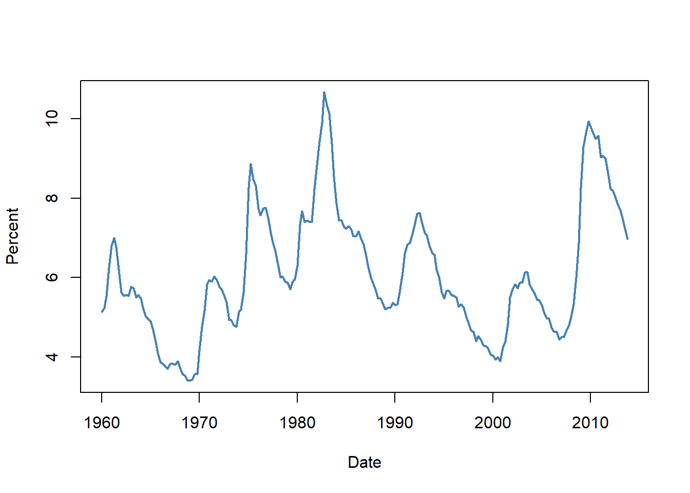
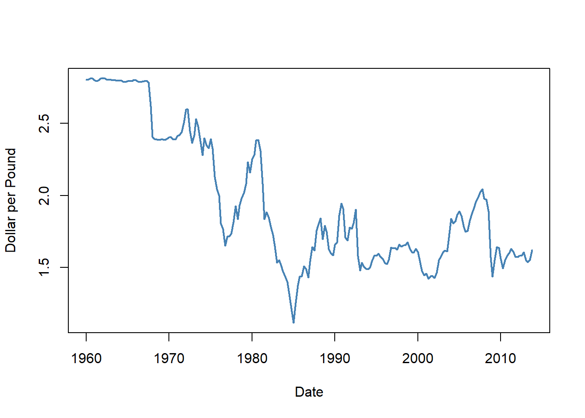
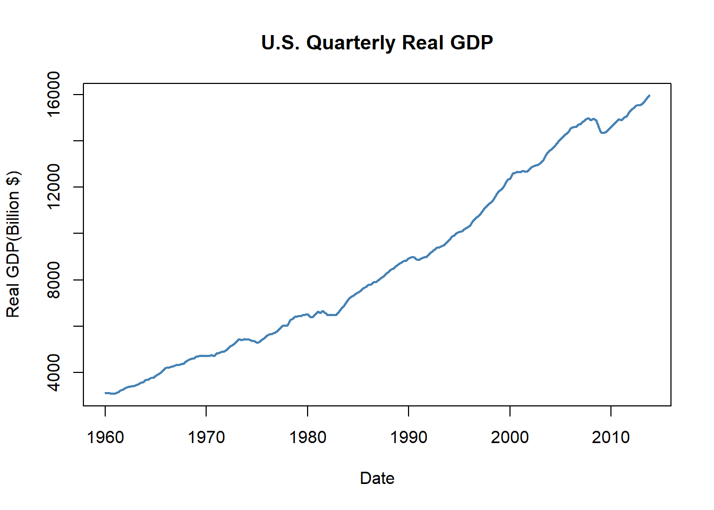
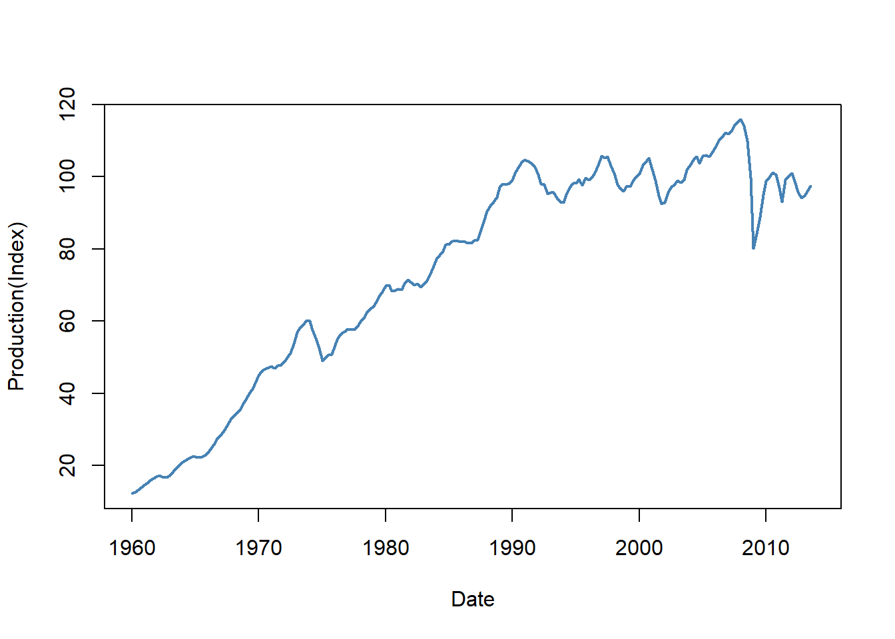
In the next example, we use the tidyverse approach to create the same plots. We first convert the ts object to a data frame. Note that we add a date column to the data frame, which is created by using the time function on the ts object. The time function returns the time index of the ts object, which we convert to a date format using the as.Date function.
# Convert ts object to data frame
df_plot <- data.frame(
date = as.Date(time(newdata)),
UNRATE = newdata[, "UNRATE"],
EXUSUK = newdata[, "EXUSUK"],
GDPC96 = newdata[, "GDPC96"],
JAPAN_IP = newdata[, "JAPAN_IP"]
)
# Plot 1: Unemployment Rate
p1 <- ggplot(df_plot, aes(x = date, y = UNRATE)) +
geom_line(linewidth = 1, color = "steelblue") +
labs(
title = "U.S. unemployment rate",
x = "Date",
y = "Percent"
)
# Plot 2: Exchange Rate
p2 <- ggplot(df_plot, aes(x = date, y = EXUSUK)) +
geom_line(linewidth = 1, color = "steelblue") +
labs(
title = "U.S. dollar per British pound exchange rate",
x = "Date",
y = "U.S. dollar per British pound"
)
# Plot 3: Real GDP
p3 <- ggplot(df_plot, aes(x = date, y = GDPC96)) +
geom_line(linewidth = 1, color = "steelblue") +
labs(
title = "U.S. Real GDP",
x = "Date",
y = "U.S. Real GDP (Billion $)"
)
# Plot 4: Industrial Production
p4 <- ggplot(df_plot, aes(x = date, y = JAPAN_IP)) +
geom_line(linewidth = 1, color = "steelblue") +
labs(
title = "Japan Index of industrial production",
x = "Date",
y = "Production (Index)"
)
# Arrange plots in a 2x2 grid
grid.arrange(p1, p2, p3, p4, ncol = 2)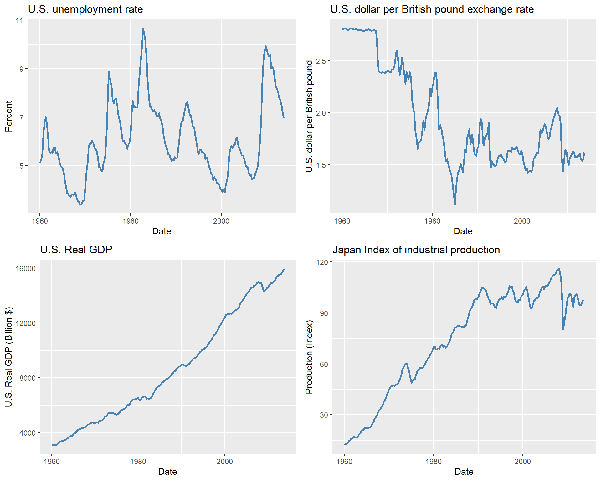
Finally, in Table 24.1, we collect some useful functions for the ts objects.
ts objects
| Function | Description |
|---|---|
start |
Returns the start time of the ts object. |
end |
Returns the end time of the ts object. |
frequency |
Returns the frequency of the ts object. |
window |
Extracts a subset of the ts object based on specified start and end times. |
time |
Returns the time index of the ts object. |
cbind/ts.union |
Combines multiple ts objects together by concatenating their columns and aligning them based on their time indices. |
rbind |
Combines multiple ts objects together by concatenating their rows and aligning them based on their time indices. |
lag |
Returns a lagged version of the ts object when k is negative and a lead version when k is positive. |
diff |
Returns the differences of the ts object. |
colnames |
Returns the column names of the ts object. |
summary |
Provides summary statistics of the ts object. |
24.3.3 The zoo class
The zoo package provides the zoo class for handling irregular time series data. We use the zoo function to create a zoo object. The syntax of the zoo function is
zoo(
x = NULL,
order.by = index(x),
frequency = NULL,
calendar = getOption("zoo.calendar", TRUE)
)The important arguments of the zoo function are:
xis the vector or matrix, or data frame of observationsorder.byis the index by which the observations should be ordered. In our case, this argument will be set to the time period of our data set.
The zoo object is essentially like a matrix but including an index attribute that specifies the time period of each observation. We can use several standard generic functions for the zoo objects, such as print, summary, str, head, tail, $ and [ for sub-setting.
Zdata <- data
# Convert Date to the quarterly data
Zdata$Date <- as.yearqtr(Zdata$Quarter, format = "%Y:0%q")
# Create a zoo object
zooData <- zoo(Zdata, order.by = Zdata$Date)
# Check class and frequency of the zoo object
class(zooData)[1] "zoo"frequency(zooData)[1] 4Above, we first convert the Quarter column in Zdata to a quarterly data by using as.yearqtr(Zdata$Date, format = "%Y:0%q"). Then, we set the index of the zoo object to the quarterly data: zoo(Zdata, order.by = Zdata$Date). In this way, we added an index of time to the data set (the first column below).
head(zooData[, c("GDPC96", "UNRATE", "EXUSUK", "JAPAN_IP")], 3) GDPC96 UNRATE EXUSUK JAPAN_IP
1957 Q1 2851.778 3.933333 <NA> 8.414363
1957 Q2 2845.453 4.100000 <NA> 9.097347
1957 Q3 2873.169 4.233333 <NA> 9.042708Alternatively, we can use the yearqtr function to create a time index and then create a zoo object.
Zdata <- data
# Create a time index
time_index <- yearqtr(seq(from = 1957, by = 0.25, length.out = nrow(Zdata)))
# Create a zoo object
zooData1 <- zoo(Zdata[-1], order.by = time_index)
# Check the first three observations
head(zooData1[, c("GDPC96", "UNRATE", "EXUSUK", "JAPAN_IP")], 3) GDPC96 UNRATE EXUSUK JAPAN_IP
1957 Q1 2851.778 3.933333 NA 8.414363
1957 Q2 2845.453 4.100000 NA 9.097347
1957 Q3 2873.169 4.233333 NA 9.042708We can also take a subset of the zoo object by using the window function.
# Taking a subset
zooData2 <- window(
zooData,
start = as.yearqtr("1960 Q1"),
end = as.yearqtr("2013 Q4")
)
# Check start and end of the new zoo object
start(zooData2)[1] "1960 Q1"end(zooData2)[1] "2013 Q4"# Return the index of the zoo object
head(zoo::index(zooData2), 5)[1] "1960 Q1" "1960 Q2" "1960 Q3" "1960 Q4" "1961 Q1"We can convert a strictly regular series with numeric index to a ts object by using the as.ts function.
tsdata <- as.ts(zooData)
class(tsdata)[1] "mts" "ts" "matrix" "array" Finally, in Table 24.2, we list some of the functions that are available for the zoo objects.
zoo objects
| Function | Description |
|---|---|
coredata |
Extracts the core data from a zoo object, returning it as a vector or matrix without the time index. |
index |
Returns the index of the zoo object. |
time |
Returns the time index of the zoo object. |
yearqtr |
Converts a date to a quarterly format. |
yearmon |
Converts a date to a monthly format. |
window |
Extracts a subset of a zoo object based on specified start and end times. |
subset |
Extracts a subset of a zoo object based on specified conditions. |
na.omit |
Removes any rows with missing values from a zoo object. |
merge |
Merges multiple zoo objects together based on their time indices. |
cbind |
Combines multiple zoo objects together by concatenating their core data and aligning them based on their time indices. |
rbind |
Combines multiple zoo objects together by concatenating their rows and aligning them based on their time indices. |
24.3.4 The xts class
The xts package extends the zoo package and provides the xts class. The xts class is designed for high-frequency data and provides additional functionality for time-based indexing and manipulation. We can create an xts object by using the xts function. The syntax of the xts function is the same as the zoo function. We can use the as.xts function to convert objects of class timeSeries, ts, irts, fts, matrix, data.frame, and zoo to xts objects.
Zdata <- data
# Convert Date to the quarterly data
Zdata$Date <- as.yearqtr(Zdata$Quarter, format = "%Y:0%q")
# GDP series as xts object
xtsData <- xts(data[, -1], order.by = Zdata$Date)
class(xtsData)[1] "xts" "zoo"head(xtsData[, c("GDPC96", "UNRATE", "EXUSUK", "JAPAN_IP")], 3) GDPC96 UNRATE EXUSUK JAPAN_IP
1957 Q1 2851.778 3.933333 NA 8.414363
1957 Q2 2845.453 4.100000 NA 9.097347
1957 Q3 2873.169 4.233333 NA 9.042708The xts object allows for time-based indexing and manipulation. For example, we can extract the data for 1960:Q1 to 1961:Q4 for the GDPC96 variable in the following way:
# Extract data for the first quarter of 1960
xtsData["1960/1961", "GDPC96"] GDPC96
1960 Q1 3120.195
1960 Q2 3108.361
1960 Q3 3116.104
1960 Q4 3078.384
1961 Q1 3099.314
1961 Q2 3156.922
1961 Q3 3209.561
1961 Q4 3274.61024.3.5 The tsibble class
The tsibble objects extend tidy data frames (tibble objects) by introducing time structure.
y <- tsibble(
Year = 2015:2019,
Observation = c(123, 39, 78, 52, 110),
index = Year
)
class(y)[1] "tbl_ts" "tbl_df" "tbl" "data.frame"print(y)# A tsibble: 5 x 2 [1Y]
Year Observation
<int> <dbl>
1 2015 123
2 2016 39
3 2017 78
4 2018 52
5 2019 110In the following, we convert data to a tsibble object. We first use the yearquarter function from the tsibble package to create a quarterly date format. We then use the seq function to create a sequence of quarterly dates starting from the first quarter of 1957. Finally, we create a tsibble object by using the tsibble function and specifying the index as the Quarters column.
# Convert Date to the quarterly date format
qtr <- yearquarter("1957 Q1")
data$Quarters <- seq(from = qtr, by = 1, length.out = nrow(data))
# Create a tsibble object
tsibbleData <- tsibble(data[, -1], index = Quarters)
class(tsibbleData)[1] "tbl_ts" "tbl_df" "tbl" "data.frame"glimpse(tsibbleData)Rows: 228
Columns: 10
$ GDPC96 <dbl> 2851.778, 2845.453, 2873.169, 2843.718, 2770.000, 2788.278, 2…
$ JAPAN_IP <dbl> 8.414363, 9.097347, 9.042708, 8.796834, 8.632918, 8.414363, 8…
$ PCECTPI <dbl> 16.449, 16.553, 16.687, 16.773, 16.978, 17.009, 17.022, 17.01…
$ GS10 <dbl> 3.403333, 3.626667, 3.926667, 3.633333, 3.040000, 2.923333, 3…
$ GS1 <dbl> 3.390000, 3.540000, 3.963333, 3.586667, 2.160000, 1.350000, 2…
$ TB3MS <dbl> 3.0966667, 3.1400000, 3.3533333, 3.3100000, 1.7566667, 0.9566…
$ UNRATE <dbl> 3.933333, 4.100000, 4.233333, 4.933333, 6.300000, 7.366667, 7…
$ EXUSUK <dbl> NA, NA, NA, NA, NA, NA, NA, NA, 2.809507, 2.814537, 2.808283,…
$ CPIAUCSL <dbl> 27.77667, 28.01333, 28.26333, 28.40000, 28.73667, 28.93000, 2…
$ Quarters <qtr> 1957 Q1, 1957 Q2, 1957 Q3, 1957 Q4, 1958 Q1, 1958 Q2, 1958 Q3…We can use the standard tidyverse functions for the tsibble objects. In the following, we plot the U.S. unemployment rate.
# Plot the unemployment rate
ggplot(tsibbleData, aes(x = Quarters, y = UNRATE)) +
geom_line(linewidth = 1, color = "steelblue") +
labs(
title = "U.S. unemployment rate",
x = "Date",
y = "Percent"
)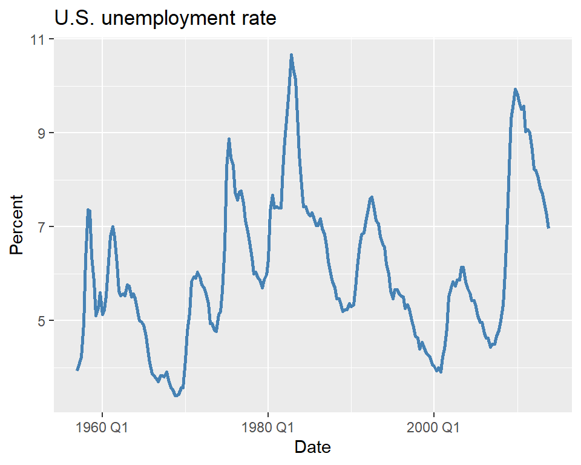
Finally, we can convert a tsibble object to a tibble object by using the as_tibble function:
tibbleData <- as_tibble(tsibbleData)
class(tibbleData)[1] "tbl_df" "tbl" "data.frame"24.4 Terminology
We need to define some new tools and notations for the analysis of time series data. These include:
- Lags, leads and differences over time.
- Logarithms, growth rates, and annualized growth rates.
Definition 24.2 (Lags, leads, differences, growth rates, and annualized growth rates) Let \(\{Y_t\}\) for \(t=1,\ldots,T\) be the time series of interest.
- The first lag of \(Y_t\) is \(Y_{t-1}\); the \(j\)th lag is \(Y_{t-j}\).
- The first lead of \(Y_t\) is \(Y_{t+1}\); the \(j\)th lead is \(Y_{t+j}\).
- The first difference of \(Y_t\) is \(\Delta Y_t = Y_t - Y_{t-1}\).
- The second difference of \(Y_t\) is \(\Delta^2 Y_t = \Delta Y_t - \Delta Y_{t-1}\).
- The one-period growth rate of \(Y\) is given by \(\frac{\Delta Y_t}{Y_{t-1}} = \frac{Y_t - Y_{t-1}}{Y_{t-1}} = \left(\frac{Y_t}{Y_{t-1}}-1\right)\).
- The annualized growth rate of \(Y\) with frequency \(s\) (i.e., annual growth rate if the one period growth rate were compounded) is \[ \left(\left(\frac{Y_t}{Y_{t-1}}\right)^{s} - 1\right). \]
The one-period growth rate of \(Y_t\) from period \(t-1\) to \(t\) defined in Definition 24.2 can be approximated by \(\Delta \ln Y_t\). This approximation is based on the following argument: \[ \begin{align} \Delta \ln Y_t&= \ln\left(\frac{Y_t}{Y_{t-1}}\right) = \ln\left(\frac{Y_{t-1}+\Delta Y_t}{Y_{t-1}}\right)= \ln\left(1+\frac{\Delta Y_t}{Y_{t-1}}\right)\\ &\approx \frac{\Delta Y_t}{Y_{t-1}} = \frac{Y_t - Y_{t-1}}{Y_{t-1}} = \frac{Y_t}{Y_{t-1}} - 1, \end{align} \] where the approximation follows from \(\ln(1+x)\approx x\) when \(x\) is small. Therefore, the annualized growth rate in \(Y_t\) with frequency \(s\) is approximately \(s\times 100 \Delta \ln Y_t\).
As an example, we consider the quarterly real GDP time series contained in the GrowthRate.xlsx file. This file contains data on the following variables:
Y: Logarithm of real GDPYGROWTH: Annual real GDP growth rateRECESSION: Recession indicator (1 if recession, 0 otherwise)
In the following, we compute the first lag and annualized growth rate of the real GDP variable. The annualized percentage growth rate is calculated using the logarithmic approximation: \(4\times100\times\left(\ln(GDP_t)-\ln(GDP_{t-1})\right)=400\times\Delta\ln(GDP_t)\). The results for 2016 and 2017 are given in Table 24.3. For example, the annualized growth rate of the real GDP from 2016:Q4 to 2017:Q1 is \(400\times\left(\ln(16903.24)-\ln(16851.42)\right)=1.23\%\).
# Load data
dfGrowth <- read_excel("data/GrowthRate.xlsx")
# Create time index and compute transformations
dfGrowth <- dfGrowth %>%
mutate(
Time = as.yearqtr(seq.Date(from = as.Date("1960-01-01"), by = "quarter", length.out = n())),
# Transformations
GDP = exp(Y),
AnnualRate = c(NA, diff(Y) * 400),
GDP_lag1 = dplyr::lag(AnnualRate, 1),
ChYGROWTH = YGROWTH - dplyr::lag(YGROWTH, 1)
)
# Subset for 2016–2017
df_subset <- dfGrowth %>%
dplyr::filter(
Time >= as.yearqtr("2016 Q1") & Time <= as.yearqtr("2017 Q4")
) %>%
dplyr::select(Time, GDP, Y, AnnualRate, GDP_lag1)# Display the subset of the data with custom column names
colnames <- c(
"Quarter",
"GDP (billons of $ 2009)",
"Logarithm of GDP",
"Growth Rate of GDP at an Annual Rate",
"First Lag of GDP Growth Rate"
)
kable(df_subset, col.names = colnames, digits = 2, align = "c")| Quarter | GDP (billons of $ 2009) | Logarithm of GDP | Growth Rate of GDP at an Annual Rate | First Lag of GDP Growth Rate |
|---|---|---|---|---|
| 2016 Q1 | 16571.57 | 9.72 | 0.58 | 0.48 |
| 2016 Q2 | 16663.52 | 9.72 | 2.21 | 0.58 |
| 2016 Q3 | 16778.15 | 9.73 | 2.74 | 2.21 |
| 2016 Q4 | 16851.42 | 9.73 | 1.74 | 2.74 |
| 2017 Q1 | 16903.24 | 9.74 | 1.23 | 1.74 |
| 2017 Q2 | 17031.09 | 9.74 | 3.01 | 1.23 |
| 2017 Q3 | 17163.89 | 9.75 | 3.11 | 3.01 |
| 2017 Q4 | 17271.70 | 9.76 | 2.50 | 3.11 |
As another example, we consider the quarterly U.S. macroeconomic dataset contained in the macroseries.csv file. We compute the first lag, the first difference, and the annualized growth rate of the U.S. consumer price index (CPI). Figure 24.4 displays the quarterly U.S. CPI index from 1957 to 2005. The shaded areas indicate recession periods, during which the real GDP growth rate is negative. The figure shows that the index exhibits an upward trend over time, particularly after the 1970s.
# Load the macroeconomic data set
dfInflation <- read_csv("data/macroseries.csv")
# Create quarterly date index (equivalent to pandas date_range with QS)
dfInflation <- dfInflation %>%
mutate(
date = as.yearqtr(seq(from = 1957, by = 0.25, length.out = n()))
)
colnames(dfInflation) [1] "periods" "u_rate" "cpi"
[4] "ff_rate" "3_m_tbill" "1_y_tbond"
[7] "dollar_pound_erate" "gdp_jp" "t_from_1960"
[10] "recession" "GS10" "TB3MS"
[13] "RSPREAD" "date" # Plot of the U.S. CPI index
ggplot(dfInflation, aes(x = date, y = cpi)) +
geom_line(color = "steelblue", linewidth =1) +
labs(
x = "Date",
y = "CPI quarterly"
)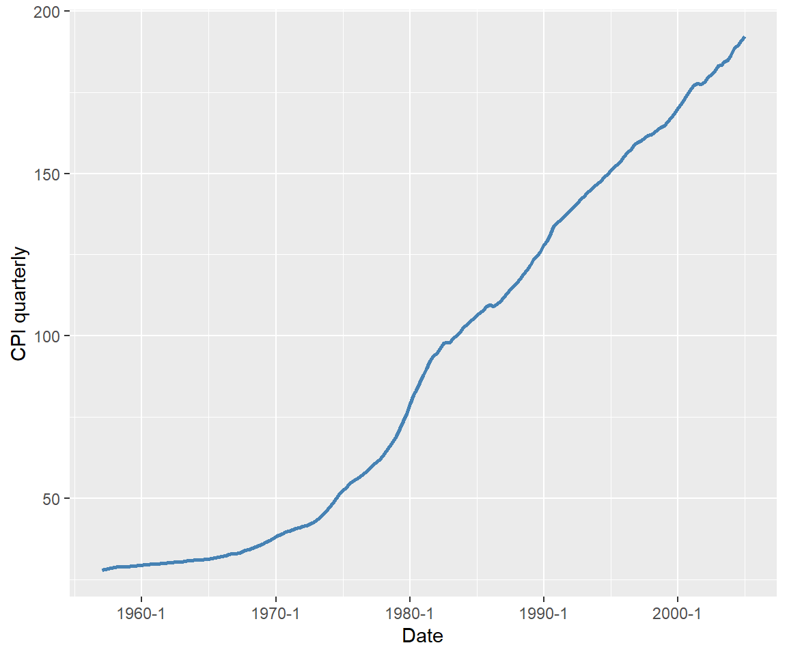
For the CPI variable, we compute lags, differences, and annualized growth rates. The CPI in the first quarter of 2004 (2004:Q1) was 186.57, and in the second quarter of 2004 (2004:Q2), it was $188.60. Then, the one-period percentage growth rate of the CPI from 2004:Q1 to 2004:Q2 is
\[ 100\times\left(\frac{188.60-186.57}{186.57}\right)=1.088\%. \]
The annualized growth rate of the CPI (inflation rate) from 2004:Q1 to 2004:Q2 is \(4\times 1.088=4.359\%\). Using the logarithmic approximation, the annualized growth rate of the CPI from 2004:Q1 to 2004:Q2 is \(4\times 100\times(\ln 188.60 - \ln 186.57)=4.329\%\). In Table 24.4, we present the annualized growth rate, the first lag, and the first difference of the CPI for the last five quarters.
# Compute inflation measures
dfInflation <- dfInflation %>%
mutate(
Inflation = 400 * (log(cpi) - dplyr::lag(log(cpi), 1)),
Inf_lag1 = dplyr::lag(Inflation, 1),
Delta_Inf = Inflation - Inf_lag1
)
# Subset last 5 rows and round
df_subset <- dfInflation %>%
dplyr::filter(
date >= as.yearqtr("2004 Q1") & date <= as.yearqtr("2005 Q1")
) %>%
dplyr::select(date, cpi, Inflation, Inf_lag1, Delta_Inf)# Set the column names
colnames <- c(
"Quarter",
"CPI",
"Inflation",
"First Lag of Inflation",
"Change in Inflation"
)
kable(df_subset, col.names = colnames, digits = 2, align = "c")| Quarter | CPI | Inflation | First Lag of Inflation | Change in Inflation |
|---|---|---|---|---|
| 2004 Q1 | 186.57 | 3.81 | 0.87 | 2.94 |
| 2004 Q2 | 188.60 | 4.34 | 3.81 | 0.53 |
| 2004 Q3 | 189.37 | 1.62 | 4.34 | -2.71 |
| 2004 Q4 | 191.03 | 3.51 | 1.62 | 1.88 |
| 2005 Q1 | 192.17 | 2.37 | 3.51 | -1.14 |
Finally, in Figure 24.5, we plot the U.S. quarterly inflation rate over 1960–2005. The figure shows that inflation fluctuates over time, exhibiting an upward trend until 1980, followed by a decline.
# Plot of U.S. quarterly inflation rate
# Subset for 1960 Q1 to 2005 Q1
filter <- dfInflation$date >= as.yearqtr("1960 Q1") &
dfInflation$date <= as.yearqtr("2005 Q1")
df_plot <- dfInflation[filter, ]
ymin <- min(df_plot$Inflation, na.rm = TRUE)
ymax <- max(df_plot$Inflation, na.rm = TRUE)
ggplot(df_plot, aes(x = date)) +
geom_rect(
data = subset(df_plot, recession == 1),
aes(xmin = date - 0.1, xmax = date + 0.1, ymin = 0, ymax = ymax),
inherit.aes = FALSE,
fill = "steelblue",
alpha = 0.3
) +
geom_line(aes(y = Inflation), color = "steelblue", linewidth = 1) +
geom_hline(yintercept = 0, linetype = "dashed", color = "black") +
labs(
x = "Date",
y = "Annual Inflation"
)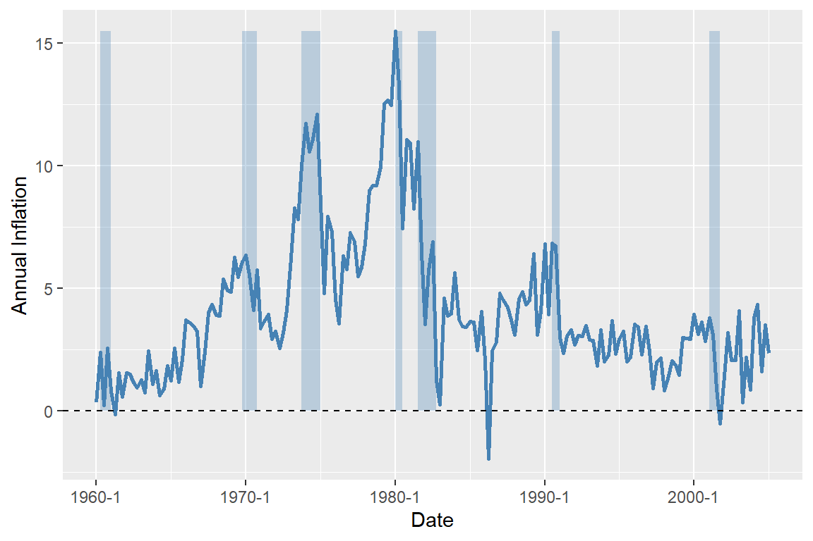
24.5 Stationarity and autocorrelation
The idea of random sampling from a large population is not suitable for time series data. It is very common for time series data to exhibit correlation over time. Therefore, in order to learn about the distribution \(\{Y_1,\dots,Y_T\}\) (joint, marginals, conditionals) a notion of constancy is needed (Hansen (2022)). Such a notion is stationarity, which is one of the most important concepts in time series analysis. It enables us to use historical relationships to forecast future values, making it a key requirement for ensuring external validity. Intuitively, if a time series is stationary, its future resembles its past in a probabilistic sense.
Definition 24.3 (Strict stationarity) A time series \(Y\) is strictly stationary if its probability distribution does not change over time, i.e., if the joint distribution of \((Y_{s+1},Y_{s+2},\dots,Y_{s+T})\) does not depend on \(s\) regardless of the value of \(T\). Otherwise, \(Y\) is said to be nonstationary. A pair of time series \(Y\) and \(X\) is said to be jointly stationary if the joint distribution of \((X_{s + 1}, Y_{s + 1}, X_{s + 2}, Y_{s + 2},\ldots, X_{s + T}, Y_{s + T})\) does not depend on \(s\) regardless of the value of \(T\).
This definition can be generalized the \(k\)-vector of time series processes. Strict stationarity is a strong assumption as it does not allow for heterogeneity and/or strong persistence. Therefore, a weaker notion of stationarity is often used in time series analysis, which is called weak stationarity.
Definition 24.4 (Weak stationarity) A time series \(Y\) is weakly stationary if its first and second moments exist and are finite, and they do not change over time. Also, its \(k\)-th autocovariance must only depend on \(k\) regardless of the value of \(T\).
Assume that \(Y\) is weakly stationary such that \(\text{E}(Y_t) = \mu\) and \(\text{var}(Y_t) = \sigma_Y^2\) for all \(t\). It is natural to expect that the leads and lags of \(Y\) are correlated. The correlation of \(Y_t\) with its lag terms is called autocorrelation or serial correlation.
Definition 24.5 (Autocorrelation) The \(k\)-th autocovariance of a series \(Y\) (denoted by \(\gamma(k)\equiv\text{cov}(Y_{t},Y_{t-k})\)) is the covariance between \(Y_t\) and its \(k\)-th lag \(Y_{t-k}\) (or \(k\)-th lead \(Y_{t+k}\)). The \(k\)-th autocorrelation coefficient between \(Y_t\) and \(Y_{t-k}\) is \[ \begin{align*} \rho(k) = \text{corr}(Y_{t},Y_{t-k})=\frac{\gamma(k)}{\sqrt{\text{var}(Y_t)\text{var}(Y_{t-k})}}=\frac{\gamma(k)}{\sigma_Y^2}. \end{align*} \tag{24.2}\]
The \(k\)-th autocorrelation coefficient is also called the \(k\)-th serial correlation coefficient and it is a measure of linear dependence. We can use the sample counterparts of the terms in Definition 24.5 to estimate the autocorrelation coefficients. The sample variance of \(Y\) is given by \[ \begin{align*} s_Y^2 = \frac{1}{T}\sum_{t=1}^T (Y_t - \overline{Y})^2, \end{align*} \]
where \(\overline{Y}\) is the sample average of \(Y\). The \(k\)-th sample autocovariance can be computed as \[ \begin{align*} \widehat{\gamma}(k) = \frac{1}{T}\sum_{t=k+1}^T(Y_t - \overline{Y}_{k+1,T})(Y_{t-k} - \overline{Y}_{1,T-k}), \end{align*} \tag{24.3}\]
where \(\overline{Y}_{k+1,T}\) is the sample average of \(Y\) for \(t=k+1,k+2,\dots,T\). Then, we can estimate the \(\rho(k)\) by the \(k\)th sample autocorrelation (serial correlation), which is given by \[ \begin{align*} \widehat{\rho}(k) = \frac{\widehat{\gamma}(k)}{s_Y^2}. \end{align*} \tag{24.4}\]
In R, there are multiple functions from different packages that can be used to compute sample autocorrelations. The base R function acf can be used to compute the sample autocorrelation coefficients and plot the sample autocorrelation function. Another function is the ggAcf function from the forecast package. As an example, we compute the sample serial autocorrelations of the U.S. GDP growth rate. Below, we use the ggAcf function. The first four sample autocorrelations are \(\hat{\rho}_1 = 0.33\), \(\hat{\rho}_2 = 0.26\), \(\hat{\rho}_3 = 0.10\), and \(\hat{\rho}_4 = 0.11\). These values suggest that GDP growth rates are mildly positively autocorrelated: when GDP grows faster than average in one period, it tends to grow faster than average in the subsequent period as well. In Figure 24.6, we plot the sample autocorrelation function of the GDP growth rate and its first difference. The figure shows that the GDP growth rate is positively autocorrelated, while the first difference of the GDP growth rate is negatively autocorrelated at lag 1 and has no significant autocorrelation at lags greater than 1.
ggAcf(dfGrowth$YGROWTH, lag.max = 12, plot = FALSE)
Autocorrelations of series 'dfGrowth$YGROWTH', by lag
0 1 2 3 4 5 6 7 8 9 10
1.000 0.333 0.263 0.102 0.108 -0.029 0.019 -0.035 -0.044 0.051 0.051
11 12
0.015 -0.089 # Serial correlation of the US GDP growth rate and its first difference
p1 <- ggAcf(dfGrowth$YGROWTH, lag.max = 12, plot = TRUE) +
labs(title = "ACF of GDP growth rate")
p2 <- ggAcf(dfGrowth$ChYGROWTH, lag.max = 12, plot = TRUE) +
labs(title = "ACF of the first difference of GDP growth rate")
grid.arrange(p1, p2, ncol = 2)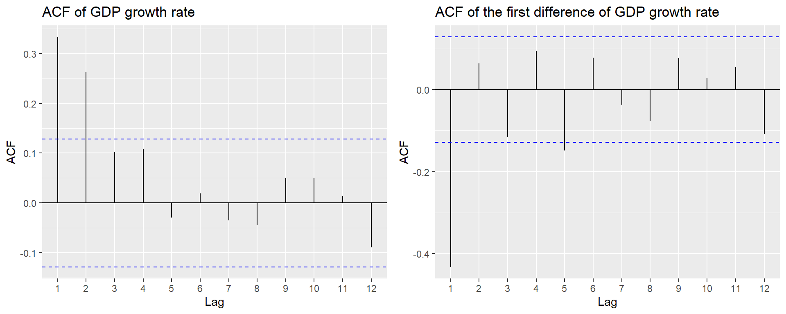
24.6 Forecast and forecast errors
Forecasting refers to predicting the values of a variable for the near future (out-of-sample). We denote the forecast for period \(T+h\) of a time series \(Y\), based on past observations \(Y_{T}, Y_{T-1}, \ldots\), and using a forecast rule (e.g., the oracle predictor), by \(Y_{T+h|T}\). When the forecast is based on an estimated rule, we denote it by \(\widehat{Y}_{T+h|T}\). Here, \(h\) represents the forecast horizon. When \(h = 1\), \(\widehat{Y}_{T+1|T}\) is called a one-step-ahead forecast; when \(h > 1\), \(\widehat{Y}_{T+h|T}\) is referred to as a multi-step-ahead forecast.
The forecast error is the difference between the actual value of the time series and the forecasted value: \[ \begin{align*} \text{Forecast error} = Y_{T+1} - \widehat{Y}_{T+1|T}. \end{align*} \tag{24.5}\]
To assess the forecast accuracy, we can use the mean squared forecast error (MSFE) and the root mean squared forecast error (RMSFE).
Definition 24.6 (Mean squared forecast error) The mean squared forecast error (MSFE) is \(\text{E}(Y_{T+1} - \widehat{Y}_{T+1|T})^2\), and the square root of the MSFE is called the root mean squared forecast error (RMSFE).
The MSFE and RMSFE can be used to compare the forecast accuracy of different models. There are two sources of randomness in the MSFE: (i) the randomness of the future value \(Y_{T+1}\), and (ii) the randomness of the estimated forecast \(\widehat{Y}_{T+1|T}\). Both randomness contributes to the forecast error. Assume that we use the mean \(\mu_Y\) of \(Y\) as the forecast for \(Y_{T+1}\). In this case, the estimated forecast is \(\widehat{Y}_{T+1|T}=\hat{\mu}_Y\), where \(\hat{\mu}_Y\) is an estimate of \(\mu_Y\). Then, the MSFE can be decomposed as follows: \[ \begin{align*} \text{MSFE} = \text{E}\left(Y_{T+1} - \hat{\mu}_Y\right)^2 = \E(Y_{T+1}-\mu_Y)^2+\E(\mu_Y-\hat{\mu}_Y)^2, \end{align*} \tag{24.6}\] where the second equality follows from the assumption that \(Y_{T+1}\) is uncorrelated with \(\hat{\mu}_Y\). The first term shows the error due to the deviation of \(Y_{T+1}\) from the mean \(\mu_Y\). The second term shows the error due to the deviation of the estimated forecast \(\hat{\mu}_Y\) from the mean \(\mu_Y\).
Definition 24.7 (Oracle forecast) The forecast rule that minimizes the MSFE is the conditional mean of \(Y_{T+1}\) given the in-sample observations \(Y_{1}, Y_{2},\dots,Y_T\), i.e., \(\E(Y_{T+1}|Y_{1}, Y_{2},\dots,Y_T)\). This forecast rule is called the oracle forecast.
The MSFE of the oracle predictor is the minimum possible MSFE. In Section 24.11, we discuss methods for estimating the MSFE and RMSFE in practice.
24.7 Autoregressions
To forecast the future values of the time series \(Y_t\), a natural starting point is to use information available from the history of \(Y_t\). An autoregression (AR) model is a regression in which \(Y_t\) is regressed on its own past values (time lag terms). The number of lags included as regressors is referred to as the order of the regression.
Definition 24.8 (The AR(\(p\)) model) The \(p\)-th order autoregressive (AR(p)) model represents the conditional expectation of \(Y_t\) as a linear function of \(p\) of its lagged values: \[ Y_t = \beta_0+\beta_1 Y_{t-1}+\beta_2Y_{t-2}+\dots+\beta_p Y_{t-p}+u_t, \tag{24.7}\]
where \(\E\left(u_t|Y_{t-1},Y_{t-2}, \dots\right)=0\). The number of lags \(p\) is called the order, or the lag length, of the autoregression.
The coefficients in the AR(p) model do not have a causal interpretation. For example, if we fail to reject \(H_0:\beta_1=0\), then we will conclude that \(Y_{t-1}\) is not useful for forecasting \(Y_t\).
The condition \(\E\left(u_t|Y_{t-1}, Y_{t-2}, \dots\right) = 0\) in Definition 24.8 has two important implications. The first implication is that the error terms \(u_t\)’s are uncorrelated, i.e., \(\text{corr}(u_t,u_{t-k})=0\) for \(k\geq 1\). To see this, we know that if \(\E(u_t|u_{t-1})=0\), then \(\corr(u_t,u_{t-1})=0\) by the law of iterated expectations. The AR(p) model implies that \[ u_{t-1}=Y_{t-1}-\beta_0-\beta_1 Y_{t-2}-\cdots-\beta_p Y_{t-p-1}=f(Y_{t-1},Y_{t-2},\dots,Y_{t-p-1}), \] where \(f\) indicates that \(u_{t-1}\) is a function of \(Y_{t-1},Y_{t-2},\dots,Y_{t-p-1}\). Then, \(\E(u_t|Y_{t-1},Y_{t-2},\dots)=0\) suggests that \[ \E(u_t|u_{t-1})=\E(u_t|f(Y_{t-1},Y_{t-2},\dots,Y_{t-p-1}))=0. \]
Thus, \(\corr(u_t,u_{t-1})=0\). A similar argument can be made for \(\corr(u_t,u_{t-2})=0\), and so on.
The second implication is that the best forecast of \(Y_{T+1}\) based on its entire history depends on only the most recent \(p\) past values: \[ \begin{align*} &Y_t = \beta_0+\beta_1 Y_{t-1}+\beta_2Y_{t-2}+\dots+\beta_pY_{t-p}+u_t\\ &\implies Y_{T+1} = \beta_0+\beta_1 Y_{T}+\beta_2Y_{T-1}+\dots+\beta_pY_{T-p+1}+u_{T+1}\\ &\implies \underbrace{\E(Y_{T + 1}| Y_1,\dots, Y_{T})}_{Y_{T+1|T}}=\beta_0+\beta_1 Y_{T}+\beta_2Y_{T-1}+\dots+\beta_pY_{T-p+1}. \end{align*} \]
In R, we can use the dynlm function from the dynlm package to estimate AR models. This function uses the OLS estimator to estimate the coefficients in the AR model. Alternatively, we can also use the arima function from the stats package to estimate AR models. The arima function uses the maximum likelihood estimator to estimate the coefficients in the AR model.
As an example, we use the data set in dfGrowth on the U.S. GDP growth rate over the period 1962:Q1-2017:Q3 to estimate the following AR models: \[
\begin{align}
&\text{GDPGR}_t=\beta_0+\beta_1\text{GDPGR}_{t-1}+u_t,\\
&\text{GDPGR}_t=\beta_0+\beta_1\text{GDPGR}_{t-1}+\beta_2\text{GDPGR}_{t-2}+u_t,
\end{align}
\tag{24.8}\] where \(\text{GDPGR}_t\) denotes the GDP growth rate at time \(t\). We use the OLS estimator with heteroskedasticity-robust standard errors to estimate these models.
# Convert dfGrowth to a ts object
tsGrowth <- ts(dfGrowth, start = c(1960, 1), frequency = 4)
# Model 1
r1 <- dynlm(
YGROWTH ~ L(YGROWTH, 1),
start = c(1962, 1),
end = c(2017, 3),
data = tsGrowth
)
# Model 2
r2 <- dynlm(
YGROWTH ~ L(YGROWTH, 1) + L(YGROWTH, 2),
start = c(1962, 1),
end = c(2017, 3),
data = tsGrowth
)# Estimation results for the AR(1) and AR(2) models
modelsummary(
models = list("AR(1)" = r1, "AR(2)" = r2),
vcov = "HC1",
stars = TRUE
)| AR(1) | AR(2) | |
|---|---|---|
| (Intercept) | 1.950*** | 1.603*** |
| (0.324) | (0.372) | |
| L(YGROWTH, 1) | 0.341*** | 0.279*** |
| (0.073) | (0.077) | |
| L(YGROWTH, 2) | 0.177* | |
| (0.077) | ||
| Num.Obs. | 223 | 223 |
| R2 | 0.117 | 0.145 |
| R2 Adj. | 0.113 | 0.138 |
| AIC | 1134.9 | 1129.7 |
| BIC | 1145.1 | 1143.3 |
| Log.Lik. | -564.431 | -560.848 |
| F | 21.599 | 13.370 |
| RMSE | 3.04 | 2.99 |
| Std.Errors | HC1 | HC1 |
| + p < 0.1, * p < 0.05, ** p < 0.01, *** p < 0.001 | ||
The estimation results are presented in Table 24.5. Note the option vcov = "HC1" in the modelsummary function indicates that we use heteroskedasticity-robust standard errors. The estimated models can be expressed as follows: \[
\begin{align}
&\widehat{\text{GDPGR}}_t=1.955+0.336\text{GDPGR}_{t-1},\\
&\widehat{\text{GDPGR}}_t=1.608+0.276\text{GDPGR}_{t-1}+0.176\text{GDPGR}_{t-2}.
\end{align}
\]
Note that we use the sample data over the period 1962:Q1-2017:Q3 to estimate both models. Thus, the last time period in the sample is \(T=2017:Q3\). We want to obtain the forecast of the growth rate in \(T+1=2017:Q4\) based on the estimated AR(2) model. The estimated model suggests that \[ \begin{align*} \text{GDPGR}_{2017:Q4|2017:Q3} &= 1.61 + 0.28 \text{GDPGR}_{2017:Q3} + 0.18 \text{GDPGR}_{2017:Q2}\\ & = 1.61 + 0.28\times 3.11 + 0.18 \times 3.01\approx3.0. \end{align*} \] Since the actual growth rate in 2017:Q4 is \(2.5\%\), the forecast error is \(2.5\% - 3.0\% = -0.5\) percentage points.
Note that we use the OLS estimator to estimate the AR models. In R, we can also use arima function from the stats package to estimate AR models. In the following, we use this function to estimate the AR(2) model for the GDP growth rate.
# Estimate the AR(2) model for the GDP growth rate
arima_model <- arima(tsGrowth[, "YGROWTH"], order = c(2, 0, 0))
summary(arima_model)
Call:
arima(x = tsGrowth[, "YGROWTH"], order = c(2, 0, 0))
Coefficients:
ar1 ar2 intercept
0.2774 0.1691 2.9993
s.e. 0.0653 0.0655 0.3609
sigma^2 estimated as 9.346: log likelihood = -588.54, aic = 1185.08
Training set error measures:
ME RMSE MAE MPE MAPE MASE ACF1
Training set -0.01068332 3.057146 2.249573 -82.59193 166 0.6926154 0.005397039For forecasting, we can use either the predict function from the stats package or the forecast function from the forecast package. Below, we use the forecast function to obtain the forecast of the GDP growth rate in 2017:Q4 based on the estimated AR(2) model. Note that the forecast is close to the forecast obtained from the dynlm function, which is approximately 3.0%.
forecast::forecast(arima_model, h = 1, level = 95) Point Forecast Lo 95 Hi 95
2018 Q1 2.880319 -3.111578 8.872216In the next example, we use the data set in macroseries.csv to estimate the AR(1) and AR(4) models for the change in the U.S. inflation rate.
# Convert dfInflation to a ts object
tsInflation <- ts(dfInflation, start = c(1957, 1), frequency = 4)
# Model 1
AR_1 <- dynlm(
Delta_Inf ~ L(Delta_Inf, 1),
start = c(1962, 1),
end = c(2004, 4),
data = tsInflation
)
# Model 2
AR_4 <- dynlm(
Delta_Inf ~ L(Delta_Inf, 1) + L(Delta_Inf, 2) + L(Delta_Inf, 3) + L(Delta_Inf, 4),
start = c(1962, 1),
end = c(2004, 4),
data = tsInflation
)# Estimation results for the AR(1) and AR(4) models
modelsummary(
models = list("AR(1)" = AR_1, "AR(4)" = AR_4),
vcov = "HC1",
stars = TRUE
)| AR(1) | AR(4) | |
|---|---|---|
| (Intercept) | 0.017 | 0.022 |
| (0.127) | (0.118) | |
| L(Delta_Inf, 1) | -0.238* | -0.258** |
| (0.097) | (0.093) | |
| L(Delta_Inf, 2) | -0.322*** | |
| (0.081) | ||
| L(Delta_Inf, 3) | 0.158+ | |
| (0.084) | ||
| L(Delta_Inf, 4) | -0.030 | |
| (0.093) | ||
| Num.Obs. | 172 | 172 |
| R2 | 0.056 | 0.204 |
| R2 Adj. | 0.051 | 0.185 |
| AIC | 667.3 | 644.0 |
| BIC | 676.7 | 662.9 |
| Log.Lik. | -330.634 | -316.023 |
| F | 6.085 | 7.932 |
| RMSE | 1.65 | 1.52 |
| Std.Errors | HC1 | HC1 |
| + p < 0.1, * p < 0.05, ** p < 0.01, *** p < 0.001 | ||
The estimation results are presented in Table 24.6. The estimated AR(\(1\)) model is \[ \widehat{\Delta \text{inf}}_t = 0.017 - 0.238 \Delta \text{inf}_{t-1}. \]
The coefficient estimate for the lag of the change in inflation is -0.238 and it is statistically significant at the conventional levels. In the dataset, the inflation rate for 2004:Q3 is 1.6 and for 2004:Q4 is 3.5. Hence, \(\Delta \text{inf}_{\text{2004:Q4}}=3.5-1.6=1.9\). Then, \(\widehat{\Delta \text{inf}}_{\text{2005:Q1}}=0.017 - 0.238\times 1.9 = -0.4352\) and \(\widehat{\text{inf}}_{\text{2005:Q1}}=-0.4352 + 3.5 = 3.0648\).
The estimated AR(4) model for the change in inflation is \[ \widehat{\Delta \text{inf}}_t = 0.022 - 0.258 \Delta \text{inf}_{t-1} - 0.322 \Delta \text{inf}_{t-2} + 0.158 \Delta \text{inf}_{t-3} - 0.030 \Delta \text{inf}_{t-4}. \]
We observe that the fit of the model improves significantly compared to the AR(1) model, as indicated by an increase in the adjusted R-squared to 0.185. Furthermore, in the AR(4) model, the additional time lag terms are jointly statistically significant, as shown by the \(F\)-test result below.
# F-test for the joint significance of the lagged changes in inflation
linearHypothesis(AR_4, c("L(Delta_Inf, 2) = 0", "L(Delta_Inf, 3) = 0", "L(Delta_Inf, 4) = 0"), white.adjust = "hc1")
Linear hypothesis test:
L(Delta_Inf, 2) = 0
L(Delta_Inf, 3) = 0
L(Delta_Inf, 4) = 0
Model 1: restricted model
Model 2: Delta_Inf ~ L(Delta_Inf, 1) + L(Delta_Inf, 2) + L(Delta_Inf,
3) + L(Delta_Inf, 4)
Note: Coefficient covariance matrix supplied.
Res.Df Df F Pr(>F)
1 170
2 167 3 6.7064 0.0002666 ***
---
Signif. codes: 0 '***' 0.001 '**' 0.01 '*' 0.05 '.' 0.1 ' ' 124.8 Autoregressive distributed lag model
In AR models, we use only the lagged values of the dependent variable \(Y\) as predictors. However, if there are other variables that may help in predicting \(Y\), we can incorporate them into the regression model. The autoregressive distributed lag (ADL) model is such a model. It includes lags of both the dependent variable \(Y\) and other explanatory variables as predictors.
Definition 24.9 (Autoregressive distributed lag model) The autoregressive distributed lag model with \(p\) lags of \(Y_t\) and \(q\) lags of \(X_t\), denoted ADL(\(p,q\)), is \[ Y_t = \beta_0 + \beta_1 Y_{t-1} + \dots + \beta_p Y_{t-p}+ \delta_1 X_{t-1}+\dots+ \delta_q X_{t-q}+u_t, \tag{24.9}\]
where \(\beta_0, \beta_1,\dots,\beta_p, \delta_1,\dots,\delta_q\), are unknown coefficients and \(u_t\) is the error term with \(\E\left(u_t|Y_{t-1}, Y_{t-2},\dots, X_{t-1}, X_{t-2},\dots\right) = 0\).
The assumption \(\E\left(u_t|Y_{t-1}, Y_{t-2},\dots, X_{t-1}, X_{t-2},\dots\right) = 0\) suggests that the error terms \(u_t\)’s are serially uncorrelated. Moreover, it indicates that the lag lengths \(p\) and \(q\) are correctly specified, such that the coefficients of lag terms beyond \(p\) and \(q\) are zero.
If there are multiple predictors \(X_1,\ldots,X_k\), then the ADL model defined in Definition 24.9 can be extended as follows:
\[
\begin{align}
Y_t &= \beta_0 + \beta_1Y_{t-1} + \beta_2Y_{t-2} +\ldots+ \beta_pY_{t-p}\nonumber\\
&+\delta_{11}X_{1t-1} + \delta_{12}X_{1t-2} + \ldots+\delta_{1q_1}X_{1t-q_1}\nonumber\\
&+\ldots+\delta_{k1}X_{kt-1} + \delta_{k2}X_{kt-2} + \ldots+\delta_{kq_k}X_{kt-q_k}+u_t,
\end{align}
\tag{24.10}\]
where \(q_1\) lags of the first predictor, \(q_2\) lags of the second predictor, and so forth are included in the model.
In the following ADL(2,1) and ADL(2,2) models, we consider the U.S. term spread (TSpread) as an additional predictor for the GDP growth rate. \[
\begin{align*}
&\text{GDPGR}_t=\beta_0+\beta_1{\tt GDPGR}_{t-1}+\beta_2{\tt GDPGR}_{t-2}+\delta_1{\tt TSpread}_{t-1}+u_t,\\
&\text{GDPGR}_t=\beta_0+\beta_1{\tt GDPGR}_{t-1}+\beta_2{\tt GDPGR}_{t-2}+\delta_1{\tt TSpread}_{t-1}+\delta_2{\tt TSpread}_{t-2}+u_t,
\end{align*}
\tag{24.11}\] where TSpread is the term spread, measured as the difference between the 10-year Treasury bond rate (the long-term interest rate) and the 3-month Treasury bill rate (the short-term interest rate).
We use the dataset provided in the TermSpread.csv file to estimate these models. In Figure 24.7, we plot the U.S. long-term and short-term interest rates. The figure shows that both interest rates tend to move together over time. Figure 24.8 displays the term spread, which is generally positive and tends to decline before the recession periods. Therefore, the term spread may serve as a useful predictor for the GDP growth rate.
# Read the term spread data
dfTermSpread <- read.csv("data/TermSpread.csv", header = TRUE)
# Convert to quarterly time series starting in 1960 Q1
tsTermSpread <- ts(dfTermSpread, start = c(1960, 1), frequency = 4)# Long-term and short-term interest rates in the US
# Create quarterly date index
dfTermSpread$Date <- as.yearqtr(seq(
from = as.Date("1960-01-01"),
by = "quarter",
length.out = nrow(dfTermSpread)
))
# Convert to Date for ggplot
dfTermSpread$Date <- as.Date(dfTermSpread$Date)
# Create a ymax for shading (like fill_between)
ymax <- max(dfTermSpread$TB3MS, na.rm = TRUE)
# Plot
ggplot(dfTermSpread, aes(x = Date)) +
# Recession shading
geom_rect(
data = subset(dfTermSpread, RECESSION == 1),
aes(xmin = Date - 45, xmax = Date + 45, ymin = 0, ymax = ymax),
inherit.aes = FALSE,
fill = "steelblue",
alpha = 0.3
) +
# Lines
geom_line(aes(y = GS10, color = "10-Year Interest Rate"), linewidth = 1) +
geom_line(aes(y = TB3MS, color = "3-Month Interest Rate"), linewidth = 1) +
# Horizontal line at zero
geom_hline(yintercept = 0, linetype = "dashed", linewidth = 0.8) +
# Labels
labs(
x = "Date",
y = "Percent per annum",
color = ""
) +
# Colors
scale_color_manual(
values = c(
"10-Year Interest Rate" = "black",
"3-Month Interest Rate" = "steelblue"
)
) +
# legend position
theme(legend.position = "top")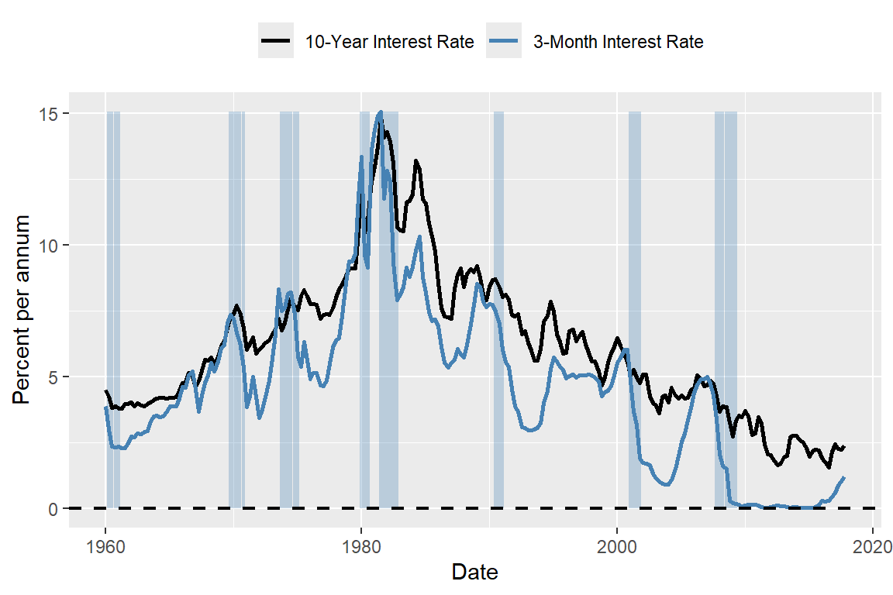
# The term spread in the US
# Get min and max for shading
ymin <- min(dfTermSpread$RSPREAD, na.rm = TRUE)
ymax <- max(dfTermSpread$RSPREAD, na.rm = TRUE)
# Plot
ggplot(dfTermSpread, aes(x = Date)) +
# Recession shading
geom_rect(
data = subset(dfTermSpread, RECESSION == 1),
aes(xmin = Date - 45, xmax = Date + 45, ymin = ymin, ymax = ymax),
inherit.aes = FALSE,
fill = "steelblue",
alpha = 0.3
) +
# Term spread line
geom_line(aes(y = RSPREAD), color = "steelblue", linewidth = 1) +
# Horizontal zero line
geom_hline(
yintercept = 0,
linetype = "dashed",
linewidth = 0.8,
color = "black"
) +
# Labels
labs(
x = "Date",
y = "Percentage points"
)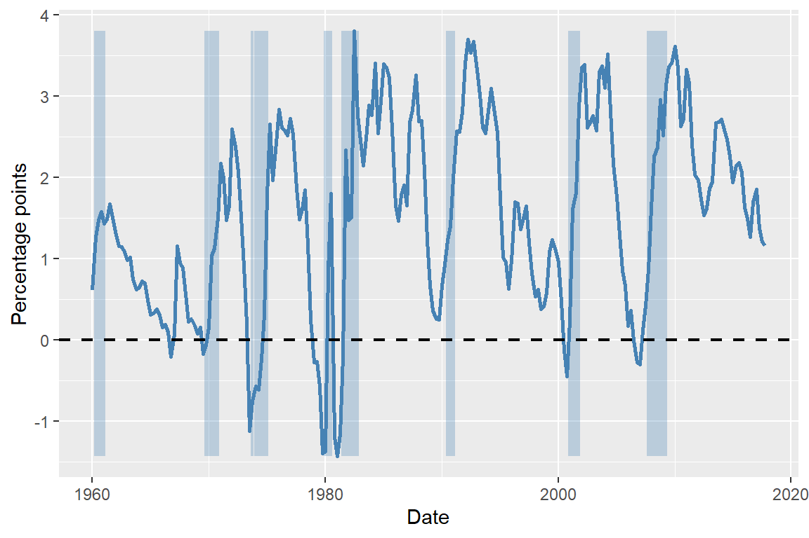
To estimate the ADL(2,1) and ADL(2,2) models, we first merge the tsGrowth and tsTermSpread datasets to create a new dataset ADLdata. We keep only the relevant columns for the GDP growth rate and the term spread, and rename them as GDPGR and TSpread, respectively.
# Merge tsGrowth and tsTermSpread
ADLdata <- cbind(tsGrowth, tsTermSpread)
# Keep only the relevant columns and convert to data frame
ADLdata <- ADLdata[, c("tsGrowth.YGROWTH", "tsTermSpread.RSPREAD")]
colnames(ADLdata) <- c("GDPGR", "TSpread")The estimation results are presented in Table 24.8. The estimated models are \[ \begin{align} &\widehat{\text{GDPGR}}_t=0.95+0.27{\tt GDPGR}_{t-1}+0.19{\tt GDPGR}_{t-2}+0.42{\tt TSpread}_{t-1},\\ &\widehat{\text{GDPGR}}_t=0.95+0.24{\tt GDPGR}_{t-1}+0.18{\tt GDPGR}_{t-2}-0.13{\tt TSpread}_{t-1}+0.62{\tt TSpread}_{t-2}. \end{align} \]
# Model 1: ADL(2,1)
m1 <- dynlm(
GDPGR ~ L(GDPGR, 1) + L(GDPGR, 2) + L(TSpread, 1),
start = c(1962, 1),
end = c(2017, 3),
data = ADLdata
)
# Model 2: ADL(2,2)
m2 <- dynlm(
GDPGR ~ L(GDPGR, 1) + L(GDPGR, 2) + L(TSpread, 1) + L(TSpread, 2),
start = c(1962, 1),
end = c(2017, 3),
data = ADLdata
)# Estimation results using `modelsummary`
modelsummary(
models = list("ADL(2,1)" = m1, "ADL(2,2)" = m2),
vcov = "HC1",
stars = TRUE
)| ADL(2,1) | ADL(2,2) | |
|---|---|---|
| (Intercept) | 0.941* | 0.944* |
| (0.474) | (0.462) | |
| L(GDPGR, 1) | 0.268** | 0.246** |
| (0.080) | (0.076) | |
| L(GDPGR, 2) | 0.190* | 0.176* |
| (0.076) | (0.076) | |
| L(TSpread, 1) | 0.421* | -0.129 |
| (0.181) | (0.420) | |
| L(TSpread, 2) | 0.618 | |
| (0.428) | ||
| Num.Obs. | 223 | 223 |
| R2 | 0.170 | 0.180 |
| R2 Adj. | 0.158 | 0.165 |
| AIC | 1125.2 | 1124.6 |
| BIC | 1142.3 | 1145.0 |
| Log.Lik. | -557.624 | -556.285 |
| F | 12.425 | 9.514 |
| RMSE | 2.95 | 2.93 |
| Std.Errors | HC1 | HC1 |
| + p < 0.1, * p < 0.05, ** p < 0.01, *** p < 0.001 | ||
The estimated coefficients in the ADL(2,2) model on the first and second lags of TSpread are statistically insignificant at the 5% level. The joint null hypothesis \(H_0:\delta_1=\delta_2=0\) can be tested using the F-statistic. The \(F\)-test result below shows that the coefficients on the term spread are jointly statistically significant.
hypotheses = c('L(TSpread, 1)=0', 'L(TSpread, 2)=0')
linearHypothesis(m2, hypotheses, white.adjust = "hc1")
Linear hypothesis test:
L(TSpread,0
L(TSpread, 2) = 0
Model 1: restricted model
Model 2: GDPGR ~ L(GDPGR, 1) + L(GDPGR, 2) + L(TSpread, 1) + L(TSpread,
2)
Note: Coefficient covariance matrix supplied.
Res.Df Df F Pr(>F)
1 220
2 218 2 3.9695 0.02026 *
---
Signif. codes: 0 '***' 0.001 '**' 0.01 '*' 0.05 '.' 0.1 ' ' 1Finally, we use the ADL(2,2) model to forecast the GDP growth rate in 2017:Q4. The forecasted GDP growth rate is \[ \begin{align*} \widehat{\text{GDPGR}}_{2017:Q4|2017:Q3} &=0.95+0.24{\tt GDPGR}_{2017:Q3}+0.18{\tt GDPGR}_{2017:Q2}\\ &-0.13{\tt TSpread}_{2017:Q3}+0.62{\tt TSpread}_{2017:Q2} \\ &=0.95 + 0.24 \times 3.11 + 0.18 \times 3.01 - 0.13 \times 1.21 + 0.62 \times 1.37\\ &= 0.95 + 0.7464 + 0.5418 - 0.1573 + 0.8494 = 2.93. \end{align*} \]
The actual GDP growth rate in 2017:Q4 was 2.5. Hence, the forecast error is \(2.5 - 2.93 = -0.43\) percentage points.
As an another example, we consider the inflation rate in the tsInflation file. According to the well-known Phillips curve, if unemployment is above its natural rate, then the inflation rate is predicted to decrease. Hence, the change in inflation is negatively related to the lagged unemployment rate. Accordingly, Figure 24.9 shows that there is a negative relationship between the change in inflation and the lagged unemployment rate.
# The relationship between the change in inflation and the lagged unemployment rate
# OLS regression of the change in inflation on the lagged unemployment rate
m3 <- dynlm(Delta_Inf ~ L(u_rate), start = c(1962, 1), end = c(2004, 4), data = tsInflation)
# Scatter plot
df_plot <- data.frame(
L_u_rate = stats::lag(tsInflation[, "u_rate"]),
Delta_Inf = tsInflation[, "Delta_Inf"]
)
ggplot(df_plot, aes(x = L_u_rate, y = Delta_Inf)) +
geom_point() +
geom_smooth(method = "lm", se = FALSE, color = "steelblue") +
labs(x = "Lagged Unemployment Rate", y = "Change in Inflation Rate")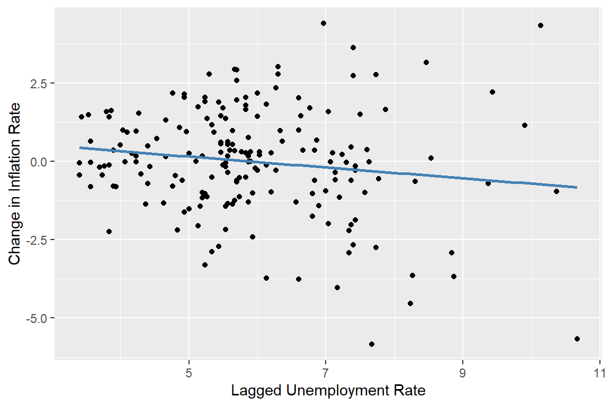
We consider the following ARDL(4,4) model for the change in inflation rate: \[ \begin{align*} \Delta \text{Inf}_t &= \beta_0 + \beta_1\Delta \text{Inf}_{t-1} + \beta_2\Delta \text{Inf}_{t-2} + \beta_3\Delta \text{Inf}_{t-3} + \beta_4\Delta \text{Inf}_{t-4}\\ &\quad + \delta_1\text{Urate}_{t-1} + \delta_2\text{Urate}_{t-2} + \delta_3\text{Urate}_{t-3} + \delta_4\text{Urate}_{t-4} + u_t, \end{align*} \tag{24.12}\] where \(\text{Urate}_t\) is the unemployment rate at time \(t\). The ARDL(4,4) model includes four lags of the change in inflation and four lags of the unemployment rate as predictors. The estimation results are presented in Table 24.9.
# Model 3: ARDL(4,4)
m3 <- dynlm(
Delta_Inf ~ L(Delta_Inf, 1) + L(Delta_Inf, 2) + L(Delta_Inf, 3) + L(Delta_Inf, 4) +
L(u_rate, 1) + L(u_rate, 2) + L(u_rate, 3) + L(u_rate, 4),
start = c(1962, 1),
end = c(2004, 4),
data = tsInflation
)# Estimation results for the ARDL(4,4) model
modelsummary(
models = list("ARDL(4,4)" = m3),
vcov = "HC1",
stars = TRUE
)| ARDL(4,4) | |
|---|---|
| (Intercept) | 1.304** |
| (0.452) | |
| L(Delta_Inf, 1) | -0.420*** |
| (0.089) | |
| L(Delta_Inf, 2) | -0.367*** |
| (0.094) | |
| L(Delta_Inf, 3) | 0.057 |
| (0.085) | |
| L(Delta_Inf, 4) | -0.036 |
| (0.084) | |
| L(u_rate, 1) | -2.636*** |
| (0.475) | |
| L(u_rate, 2) | 3.043*** |
| (0.880) | |
| L(u_rate, 3) | -0.377 |
| (0.912) | |
| L(u_rate, 4) | -0.248 |
| (0.461) | |
| Num.Obs. | 172 |
| R2 | 0.366 |
| R2 Adj. | 0.335 |
| AIC | 612.8 |
| BIC | 644.3 |
| Log.Lik. | -296.397 |
| F | 8.953 |
| RMSE | 1.36 |
| Std.Errors | HC1 |
| + p < 0.1, * p < 0.05, ** p < 0.01, *** p < 0.001 | |
According to the estimation results in Table 24.9, the fit of the ARDL(4,4) model is significantly better than the AR(4) model in Table 24.6. The adjusted R-squared increases from 0.185 in the AR(4) model to 0.335 in the ARDL(4,4) model. Furthermore, the F-statistic for the joint null hypothesis \(H_0:\delta_1=\ldots=\delta_4=0\) computed below indicates that the additional time lag terms for the unemployment rate are jointly statistically significant at the 5% level.
# F-test for the joint significance of the lagged unemployment rates
hypotheses = c('L(u_rate, 1)=0', 'L(u_rate, 2)=0', 'L(u_rate, 3)=0', 'L(u_rate, 4)=0')
linearHypothesis(m3, hypotheses, white.adjust = "hc1")
Linear hypothesis test:
L(u_rate,0
L(u_rate, 2) = 0
L(u_rate, 3) = 0
L(u_rate, 4) = 0
Model 1: restricted model
Model 2: Delta_Inf ~ L(Delta_Inf, 1) + L(Delta_Inf, 2) + L(Delta_Inf,
3) + L(Delta_Inf, 4) + L(u_rate, 1) + L(u_rate, 2) + L(u_rate,
3) + L(u_rate, 4)
Note: Coefficient covariance matrix supplied.
Res.Df Df F Pr(>F)
1 167
2 163 4 8.4433 3.242e-06 ***
---
Signif. codes: 0 '***' 0.001 '**' 0.01 '*' 0.05 '.' 0.1 ' ' 124.9 The least squares assumptions for forecasting with multiple predictors
In this section, we state the assumptions that we need for the estimation of the AR and ADL models by the OLS estimator. We consider the following general ADL model, which includes \(m\) additional predictors. In this model, \(q_1\) lags of the first predictor, \(q_2\) lags of the second predictor, and so forth are incorporated: \[ \begin{align*} Y_t &= \beta_0 + \beta_1Y_{t-1} + \beta_2Y_{t-2} +\dots+ \beta_pY_{t-p}\\ &\quad +\delta_{11}X_{1,t-1} + \delta_{12}X_{1,t-2} + \dots +\delta_{1q_1}X_{1,t-q_1} + \dots \\ &\quad + \delta_{m1}X_{m,t-1} + \delta_{m2}X_{m,t-2} + \dots +\delta_{mq_m}X_{m,t-q_m}+u_t. \end{align*} \tag{24.13}\]
The first assumption indicates that the error term \(u_t\) has zero conditional mean given the lagged values of the dependent variable and the predictors. This assumption has two implications: (i) the error terms \(u_t\)’s are serially uncorrelated, and (ii) the lag lengths \(p\), \(q_1\), \(q_2\), , \(q_m\) are correctly specified, such that the coefficients of lag terms beyond \(p\), \(q_1\), \(q_2\), , \(q_m\) are zero. The first part of the second assumption indicates that the distribution of data does not change over time. This part can be considered as the time series version of the i.i.d asumption we used for the cross-sectional data. The second part indicates that \(\left(Y_t, X_{1t},\dots, X_{mt}\right)\) and \(\left(Y_{t-k}, X_{1,t-k},\dots,X_{m,t-k}\right)\) become independent as \(k\) gets larger. This assumption is sometimes referred to as the weak dependence assumption. The third and fourth assumptions are same as the ones we used for the multiple linear regression model.
Theorem 24.1 (Properties of OLS estimator using time series data) Under the least squares assumptions, the large-sample properties of the OLS estimator are similar to those in the case of cross-sectional data. Namely, the OLS estimator is consistent and has an asymptotic normal distribution when \(T\) is large.
24.10 Lag order selection
How should we choose the number of lags \(p\) in an AR(p) model? One approach to determining the number of lags is to use sequential downward \(t\) or \(F\) tests. However, this method may select a large number of lags. Alternatively, we can use information criteria to select the lag order. Information criteria balance bias (too few lags) against variance (too many lags).
Two widely used information criteria are the Bayesian information criterion (BIC) and the Akaike information criterion (AIC). For an AR(p) model, the BIC and AIC are defined as \[ \begin{align*} \text{BIC}(p) &= \ln\frac{SSR(p)}{T} + (p+1)\frac{\ln T}{T}, \\ \text{AIC}(p) &= \ln\frac{SSR(p)}{T} + (p+1)\frac{2}{T}, \end{align*} \tag{24.14}\] where \(SSR(p)\) is the sum of squared residuals from the AR(p) model. The estimator of \(p\) is the value that minimizes the BIC or AIC. That is, if \(\hat{p}\) is the estimator of \(p\), then it is defined as \[ \hat{p} = \arg\min_{p} \text{BIC}(p) \quad \text{or} \quad \hat{p} = \arg\min_{p} \text{AIC}(p). \tag{24.15}\]
Note that the first term in both BIC and AIC is always decreasing in \(p\) (larger \(p\), better fit). The second term is always increasing in \(p\). The second term is a penalty for using more parameters, and thus increasing the forecast variance. The penalty term is smaller for AIC than BIC, hence AIC estimates more lags (larger \(p\)) than the BIC. This may be desirable if we believe that longer lags are important for the dynamics of the process.
Theorem 24.2 The BIC estimator of \(p\) is a consistent estimator in the sense that \(P(\hat{p}=p)\to 1\), whereas the AIC estimator is not consistent.
Proof (Proof of Theorem 24.2). For simplicity, assume that true \(p\) is \(1\), then we need to show that (i) \(P(\hat{p}=0)\to 0\) and (ii) \(P(\hat{p}=2)\to 0\). To choose \(\hat{p}=0\), it must be the case that \(\text{BIC}(0)-\text{BIC}(1)<0\). Consider \(\text{BIC}(0)-\text{BIC}(1)\): \[ \text{BIC}(0)-\text{BIC}(1)=\ln(SSR(0)/T)-\ln(SSR(1)/T) -\ln(T)/T. \]
It follows that \(SSR(0)/T=((T-1)/T)s_Y^2\to\sigma^2_Y\), where \(\sigma^2_Y\) is the variance of the process \(Y\) and \(s_Y^2\) is its sample counterpart. Similarly, \(SSR(1)/T=((T-2)/T)s^2_{\hat{u}}\to\sigma^2_{u}\), where \(\sigma^2_u\) is the variance of the error term. Thus, \[ \text{BIC}(0)-\text{BIC}(1)\to\ln(\sigma^2_Y)-\ln(\sigma^2_u), \] because \(\ln(T)/T\to 0\). Since \(\sigma^2_Y>\sigma^2_u\), it follows that \(\text{BIC}(0)-\text{BIC}(1)>0\). This implies that \(P(\hat{p}=0)\to 0\).
Similarly, to choose \(\hat{p}=2\), it must be the case that \(\text{BIC}(2)-\text{BIC}(1)<0\). Consider \(T[\text{BIC}(2)-\text{BIC}(1)]\): \[ \begin{align*} &T[\text{BIC}(2)-\text{BIC}(1)]= T[\ln(SSR(2)/T)-\ln(SSR(1)/T)] +\ln(T)\\ &=T\ln(SSR(2)/SSR(1))+\ln(T)=-T\ln(1+F/(T-2))+\ln(T), \end{align*} \] where \(F=(SSR(1)-SSR(2))/(SSR(2)/(T-2))\) is the homoskedasticity-only \(F\)-statistic for testing \(H_0:\beta_2=0\) in the AR(2) model. Then, \[ \begin{align*} P(\text{BIC}(2)-\text{BIC}(1)<0)&= P(T[\text{BIC}(2)-\text{BIC}(1)]<0)\\ &=P([-T\ln(1+F/(T-2))+\ln(T)]<0)\\ \end{align*} \] Since \(T\ln(1+F/(T-2))-F\approx TF/(T-2)-F\xrightarrow{p}0\), we have \[ \begin{align*} P(\text{BIC}(2)-\text{BIC}(1)<0)&=P(T\ln(1+F/(T-2))>\ln(T))\to P(F>\ln(T))\to 0. \end{align*} \] Thus, \(P(\hat{p}=2)\to0\).
For the general case where \(0\leq p\leq p_{max}\), we can use the same argument to show that \(P(\hat{p}<p)\to0\) and \(P(\hat{p}>p)\to0\). Therefore, the BIC estimator is consistent.
In the case of AIC, we can use the same argument to show that \(P(\hat{p}=0)\to 0\). However, to show that \(P(\hat{p}=2)\to 0\), we need to show that \(P(\text{AIC}(2)-\text{AIC}(1)<0)\to 0\). Using the same argument as above, we have \[ \begin{align*} P(\text{AIC}(2)-\text{AIC}(1)<0)&=P(F>2)>0. \end{align*} \]
Therefore, the AIC estimator is not consistent. For example, if the error terms are homoskedastic, then \[ \begin{align*} P(\text{AIC}(2)-\text{AIC}(1)<0)&=P(F>2)\to P(\chi^2_1>2)=0.16. \end{align*} \]
In general, we have \(P(\hat{p}<p)\to0\), but \(P(\hat{p}>p)\not\to0\). Thus, the AIC can overestimate the number of lags even in large samples.
As in an autoregression, the BIC and the AIC can also be used to estimate the number of lags and variables in the time series regression model with multiple predictors. If the regression model has \(k\) coefficients (including the intercept), then \[ \begin{align} &\text{BIC}(k)=\ln\left(SSR(k)/T\right)+k\ln(T)/T,\\ &\text{AIC}(k)=\ln\left(SSR(k)/T\right)+2k/T. \end{align} \]
For each value of \(k\), the BIC (or AIC) can be computed, and the model with the lowest value of the BIC (or AIC) is preferred based on the information criterion.
24.11 Estimation of the MSFE and forecast intervals
Stock and Watson (2020) consider three estimators for estimating the MSFE. These estimators are:
- The standard error of the regression (SER) estimator,
- The final prediction error (FPE) estimator, and
- The pseudo out-of-sample (POOS) forecasting estimator.
The first two estimators are derived from the expression for the MSFE and rely on the stationarity assumption. Under stationarity, the MSFE for an AR(p) model can be expressed as: \[ \begin{align*} \text{MSFE}&=\E\left[\left(Y_{T+1}-\widehat{Y}_{T+1|T}\right)^2\right]\\ &=\E\big[(\beta_0+\beta_1 Y_{T}+\beta_2Y_{T-1}+\ldots+\beta_pY_{T-p+1}+u_{T+1}\\ &\quad- (\hat{\beta}_0+\hat{\beta}_1 Y_{T}+\hat{\beta}_2Y_{T-1}+\ldots+\hat{\beta}_pY_{T-p+1}))^2\big]\\ &=\E(u^2_{T+1})+\E\left(\left((\hat{\beta}_0-\beta_0)+(\hat{\beta}_1-\beta_1)Y_T+\ldots+(\beta_p-\hat{\beta}_p)Y_{T-p+1}\right)^2\right). \end{align*} \tag{24.16}\]
Since the variance of the OLS estimator is proportional to \(1/T\), the second term is proportional to \(1/T\). Consequently, if the number of observations \(T\) is large relative to the number of autoregressive lags \(p\), then the contribution of the second term is small relative to the first term. This leads to the approximation MSFE\(\approx\sigma^2_u\), where \(\sigma^2_u\) is the variance of \(u_t\). Based on this simplification, the SER estimator of the MSFE is formulated as \[ \begin{align} \widehat{MSFE}_{SER}=s^2_{\hat{u}},\quad\text{where}\quad s^2_{\hat{u}}=\frac{SSR}{T-p-1}, \end{align} \tag{24.17}\] and \(SSR\) is the sum of squared residuals from the autoregression. Note that this method assumes stationarity and ignores estimation error stemming from the estimation of the forecast rule.
The FPE method incorporates both terms in the MSFE formula under the additional assumption that the error are homoskedastic. Under homoskedasticity, it can be shown that (see Appendix B) \[ \E\left(\left((\hat{\beta}_0-\beta_0)+(\hat{\beta}_1-\beta_1)Y_T+\ldots+(\beta_p-\hat{\beta}_p)Y_{T-p+1}\right)^2\right)\approx \sigma^2_u((p+1)/T). \]
Then, the MSFE can be expressed as \(\text{MSFE}=\sigma^2_u+\sigma^2_u((p+1)/T)=\sigma^2_u(T+p+1)/T\). Then, the FPE estimator is given by \[ \begin{align} \widehat{MSFE}_{FPE}=\left(\frac{T+p+1}{T}\right)s^2_{\hat{u}}=\left(\frac{T+p+1}{T-p-1}\right)\frac{SSR}{T}. \end{align} \tag{24.18}\]
The third method, the pseudo out-of-sample (POOS) forecasting, does not require the stationarity assumption. In the following callout, we show how the POOS method is implemented.
Once we have an estimate of the MSFE, we can construct a forecast interval for \(Y_{T+1}\). Assuming that \(u_{T+1}\) is normally distributed, the 95% forecast interval is given by \[ \widehat{Y}_{T|T-1}\pm 1.96\times \widehat{\text{RMSFE}}. \]
The 95% forecast interval is not a confidence interval for \(Y_{T+1}\). The key distinction is that \(Y_{T+1}\) is a random variable, not a fixed parameter. Nevertheless, the forecast interval is widely used in practice as a measure of forecast uncertainty and can still provide a reasonable approximation, even when \(u_{T+1}\) is not normally distributed.
As an example, we compare the forecasting performance of the AR(2) model in Equation 24.8 with that of the ADL(2,2) model in Equation 24.11. In the following code chunk, we estimate both models and compute the SER and FPE estimates of the RMSFE. Using the POOS method, we forecast the GDP growth rate over the period 2007:Q1 to 2017:Q3 with both models.
# We use the ADLdata
mydata <- ADLdata
# Keep relevant sample
mydata <- window(mydata, start = c(1962, 1), end = c(2017, 3))
# Remove NA
mydata <- na.omit(mydata)
# AR(2) model
ar_result <- dynlm(GDPGR ~ L(GDPGR, 1) + L(GDPGR, 2), data = mydata)
# ADL(2,2) model
adl_result <- dynlm(
GDPGR ~ L(GDPGR, 1) + L(GDPGR, 2) + L(TSpread, 1) + L(TSpread, 2),
data = mydata
)
# RMSFE (SER and FPE)
n_ar <- length(residuals(ar_result))
k_ar <- 2 # number of regressors (lags)
n_adl <- length(residuals(adl_result))
k_adl <- 4
RMSFE_SER_AR <- sqrt(sum(residuals(ar_result)^2) / (n_ar - k_ar - 1))
RMSFE_FPE_AR <- sqrt(
((n_ar + k_ar + 1) / (n_ar - k_ar - 1)) * sum(residuals(ar_result)^2) / n_ar
)
RMSFE_SER_ADL <- sqrt(sum(residuals(adl_result)^2) / (n_adl - k_adl - 1))
RMSFE_FPE_ADL <- sqrt(
((n_adl + k_adl + 1) / (n_adl - k_adl - 1)) * sum(residuals(adl_result)^2) / n_adl
)
# Define evaluation sample
time_index <- time(mydata)
t1 <- which(time_index == 2007.0) # 2007 Q1
T <- which(time_index == 2017.5) # 2017 Q3
# Preallocate
savers_ar2 <- matrix(NA, nrow = T - t1 + 1, ncol = 2)
savers_adl <- matrix(NA, nrow = T - t1 + 1, ncol = 2)
# Recursive (rolling) forecasts
for (t in 1:(T - t1 + 1)) {
idx0 <- t1 + t - 1 # forecast target
idx1 <- idx0 - 1 # t-1
idx2 <- idx0 - 2 # t-2
# Expanding window
data_slice <- window(mydata, end = time_index[idx1])
# AR(2)
ar_model <- dynlm(GDPGR ~ L(GDPGR, 1) + L(GDPGR, 2), data = data_slice)
b <- coef(ar_model)
forecast_ar <- b[1] +
b[2] * mydata[idx1, "GDPGR"] +
b[3] * mydata[idx2, "GDPGR"]
savers_ar2[t, 1] <- mydata[idx0, "GDPGR"] - forecast_ar
savers_ar2[t, 2] <- forecast_ar
# ADL(2,2)
adl_model <- dynlm(
GDPGR ~ L(GDPGR, 1) + L(GDPGR, 2) + L(TSpread, 1) + L(TSpread, 2),
data = data_slice
)
b2 <- coef(adl_model)
forecast_adl <- b2[1] +
b2[2] * mydata[idx1, "GDPGR"] +
b2[3] * mydata[idx2, "GDPGR"] +
b2[4] * mydata[idx1, "TSpread"] +
b2[5] * mydata[idx2, "TSpread"]
savers_adl[t, 1] <- mydata[idx0, "GDPGR"] - forecast_adl
savers_adl[t, 2] <- forecast_adl
}
# RMSFE (Pseudo Out-of-Sample)
RMSFE_POOS_AR <- sqrt(mean(savers_ar2[, 1]^2, na.rm = TRUE))
RMSFE_POOS_ADL <- sqrt(mean(savers_adl[, 1]^2, na.rm = TRUE))The estimated RMSFE values are presented in Table 24.10. The results show that, for both models, the FPE estimate is slightly larger than the SER estimate, consistent with the formulas in Equation 24.17 and Equation 24.18. The POOS method yields the smallest RMSFE estimates for both models. Since the POOS estimate is slightly lower for the AR(2) model, we conclude that the AR(2) model is preferred over the ADL(2,2) model for forecasting the GDP growth rate.
# Collect results in a data frame
results <- data.frame(
Model = c("AR(2)", "ADL(2,2)"),
RMSFE_SER = c(RMSFE_SER_AR, RMSFE_SER_ADL),
RMSFE_FPE = c(RMSFE_FPE_AR, RMSFE_FPE_ADL),
RMSFE_POOS = c(RMSFE_POOS_AR, RMSFE_POOS_ADL)
)
kable(results, digits = 3)| Model | RMSFE_SER | RMSFE_FPE | RMSFE_POOS |
|---|---|---|---|
| AR(2) | 3.023 | 3.043 | 2.551 |
| ADL(2,2) | 2.975 | 3.008 | 2.749 |
In Figure 24.10, we plot the one-step-ahead forecasted values obtained using the POOS method from both models. We also include the 95% forecast intervals. Note that the forecast intervals include the true values, except during the Great Recession of 2007.
mydata <- ADLdata
# Keep relevant variables and sample
mydata <- window(mydata, start = c(1962, 1), end = c(2017, 3))
# Time index from ts object
time_index <- time(mydata)
# Convert to Date
Date <- as.Date(as.yearqtr(time_index))
# Define indices
t1 <- which(time_index == 2007.0)
T <- which(time_index == 2017.5)
# Create forecast vectors aligned with full sample
forecasts_ar <- rep(NA, T)
forecasts_adl <- rep(NA, T)
# Fill forecasts
forecasts_ar[t1:T] <- savers_ar2[, 2]
forecasts_adl[t1:T] <- savers_adl[, 2]
# Forecast intervals
forecast_interval_ar <- 1.96 * RMSFE_POOS_AR
forecast_interval_adl <- 1.96 * RMSFE_POOS_ADL
# Build plotting data frame
df_plot <- data.frame(
Date = Date,
GDPGR = as.numeric(mydata[, "GDPGR"]),
AR = forecasts_ar,
ADL = forecasts_adl
)
# Plot
ggplot(df_plot, aes(x = Date)) +
# Actual series
geom_line(aes(y = GDPGR, color = "Actual"), linewidth = 1) +
# AR(2) forecast + interval
geom_line(aes(y = AR, color = "Forecast-AR(2)"),
linetype = "dashed", linewidth = 1) +
geom_ribbon(aes(ymin = AR - forecast_interval_ar,
ymax = AR + forecast_interval_ar),
fill = "red", alpha = 0.3, na.rm = TRUE) +
# ADL(2,2) forecast + interval
geom_line(aes(y = ADL, color = "Forecast-ADL(2,2)"),
linetype = "dashed", linewidth = 1) +
geom_ribbon(aes(ymin = ADL - forecast_interval_adl,
ymax = ADL + forecast_interval_adl),
fill = "black", alpha = 0.2, na.rm = TRUE) +
# Vertical line at t1
geom_vline(xintercept = Date[t1],
linetype = "dashed", linewidth = 0.8) +
# Annotation for t1
annotate("text",
x = Date[t1-5],
y = max(df_plot$GDPGR, na.rm = TRUE),
label = "t1",
vjust = -0.5) +
# Labels
labs(
x = "Time",
y = "GDP Growth Rate",
color = ""
) +
# Colors
scale_color_manual(values = c(
"Actual" = "steelblue",
"Forecast-AR(2)" = "red",
"Forecast-ADL(2,2)" = "black"
)) +
theme(legend.position = "top")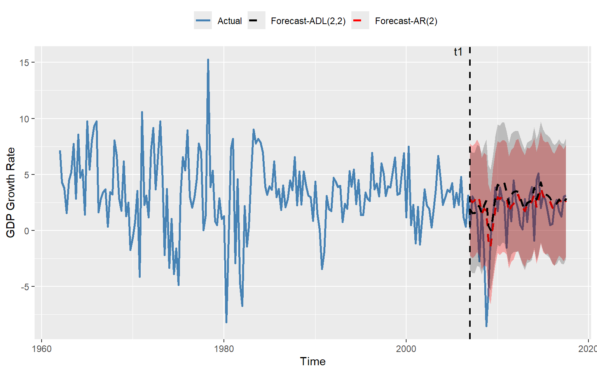
In the next example, we consider the ADL(4,4) model in Equation 24.12 for the change in inflation. We set \(t_1\) to 1990:Q1 and \(T\) to 2004:Q4. The estimated values of the RMSFE using the SER, FPE, and POOS methods are presented in Table 24.9. The results show that the FPE estimate is slightly larger than the SER estimate, which is consistent with the formulas given in Equation 24.17 and Equation 24.18. The POOS method provides the smallest estimate of the RMSFE.
# Data preparation
mydata <- tsInflation
mydata <- window(mydata, start = c(1962, 1), end = c(2004, 4))
mydata <- na.omit(mydata)
# ARDL(4,4) model
adl_result <- dynlm(
Delta_Inf ~ L(Delta_Inf, 1) + L(Delta_Inf, 2) + L(Delta_Inf, 3) + L(Delta_Inf, 4) +
L(u_rate, 1) + L(u_rate, 2) + L(u_rate, 3) + L(u_rate, 4),
data = mydata
)
# RMSFE (SER and FPE)
n_adl <- length(residuals(adl_result))
k_adl <- 8 # number of regressors (lags)
RMSFE_SER_ADL <- sqrt(sum(residuals(adl_result)^2)/(n_adl - k_adl - 1))
RMSFE_FPE_ADL <- sqrt(
((n_adl + k_adl + 1) / (n_adl - k_adl - 1)) * sum(residuals(adl_result)^2 / n_adl)
)
# Define evaluation sample
time_index <- time(mydata)
t1 <- which(time_index == 1990.0) # 1990 Q1
T <- which(time_index == 2004.75) # 2004 Q4
# Preallocate
savers_adl <- matrix(NA, nrow = T - t1 + 1, ncol = 2)
# Recursive (rolling) forecasts
for (t in 1:(T - t1 + 1)) {
idx0 <- t1 + t - 1 # forecast target
idx1 <- idx0 - 1 # t-1
idx2 <- idx0 - 2 # t-2
idx3 <- idx0 - 3 # t-3
idx4 <- idx0 - 4 # t-4
# Expanding window
data_slice <- window(mydata, end = time_index[idx1])
# ADL(4,4)
adl_model <- dynlm(
Delta_Inf ~ L(Delta_Inf, 1) + L(Delta_Inf, 2) + L(Delta_Inf, 3) + L(Delta_Inf, 4) +
L(u_rate, 1) + L(u_rate, 2) + L(u_rate, 3) + L(u_rate, 4),
data = data_slice
)
b2 <- coef(adl_model)
forecast_adl <- b2[1] +
b2[2] * mydata[idx1, "Delta_Inf"] +
b2[3] * mydata[idx2, "Delta_Inf"] +
b2[4] * mydata[idx3, "Delta_Inf"] +
b2[5] * mydata[idx4, "Delta_Inf"] +
b2[6] * mydata[idx1, "u_rate"] +
b2[7] * mydata[idx2, "u_rate"] +
b2[8] * mydata[idx3, "u_rate"] +
b2[9] * mydata[idx4, "u_rate"]
savers_adl[t, 1] <- mydata[idx0, "Delta_Inf"] - forecast_adl
savers_adl[t, 2] <- mydata[idx1, "Inflation"] + forecast_adl
}
# RMSFE (Pseudo Out-of-Sample)
RMSFE_POOS_ADL <- sqrt(mean(savers_adl[, 1]^2, na.rm = TRUE))# Collect results in a data frame
results <- data.frame(
Model = "ADL(4,4)",
RMSFE_SER = RMSFE_SER_ADL,
RMSFE_FPE = RMSFE_FPE_ADL,
RMSFE_POOS = RMSFE_POOS_ADL
)
kable(results, digits = 3)| Model | RMSFE_SER | RMSFE_FPE | RMSFE_POOS |
|---|---|---|---|
| ADL(4,4) | 1.407 | 1.444 | 1.259 |
Finally, we plot the one-step-ahead forecasted values obtained using the POOS method for the ADL(4,4) model of the change in the inflation rate. In Figure 24.11, we provide the plots of forecasts and the \(95\%\) forecast interval.
mydata <- tsInflation
mydata <- window(mydata, start = c(1962, 1), end = c(2004, 4))
# Time index from ts object
time_index <- time(mydata)
Date <- as.Date(as.yearqtr(time_index))
# Define indices
t1 <- which(time_index == 1990.0) # 1990 Q1
T <- which(time_index == 2004.75) # 2004 Q4
# Create forecast vector aligned with full sample
forecasts_adl <- rep(NA, T)
forecasts_adl[t1:T] <- savers_adl[, 2]
# Forecast interval
forecast_interval_adl <- 1.96 * RMSFE_POOS_ADL
# Build plotting data frame
df_plot <- data.frame(
Date = Date,
Delta_Inf = as.numeric(mydata[, "Delta_Inf"]),
Inflation = as.numeric(mydata[, "Inflation"]),
ADL = forecasts_adl
)
# Plot
ggplot(df_plot, aes(x = Date)) +
geom_line(aes(y = Inflation, color = "Actual"), linewidth = 1) +
geom_line(
aes(y = ADL, color = "Forecast-ADL(4,4)"),
linetype = "solid",
linewidth = 0.8
) +
geom_ribbon(
aes(ymin = ADL - forecast_interval_adl, ymax = ADL + forecast_interval_adl),
fill = "black",
alpha = 0.3,
na.rm = TRUE
) +
geom_vline(xintercept = Date[t1], linetype = "dashed", linewidth = 0.8) +
# Annotation for t1
annotate(
"text",
x = Date[t1 - 5],
y = max(df_plot$Inflation, na.rm = TRUE),
label = "t1",
vjust = -0.5
) +
labs(
x = "Time",
y = "Change in Inflation Rate",
color = ""
) +
# Colors
scale_color_manual(
values = c(
"Actual" = "steelblue",
"Forecast-ADL(4,4)" = "red"
)
) +
theme(legend.position = "top")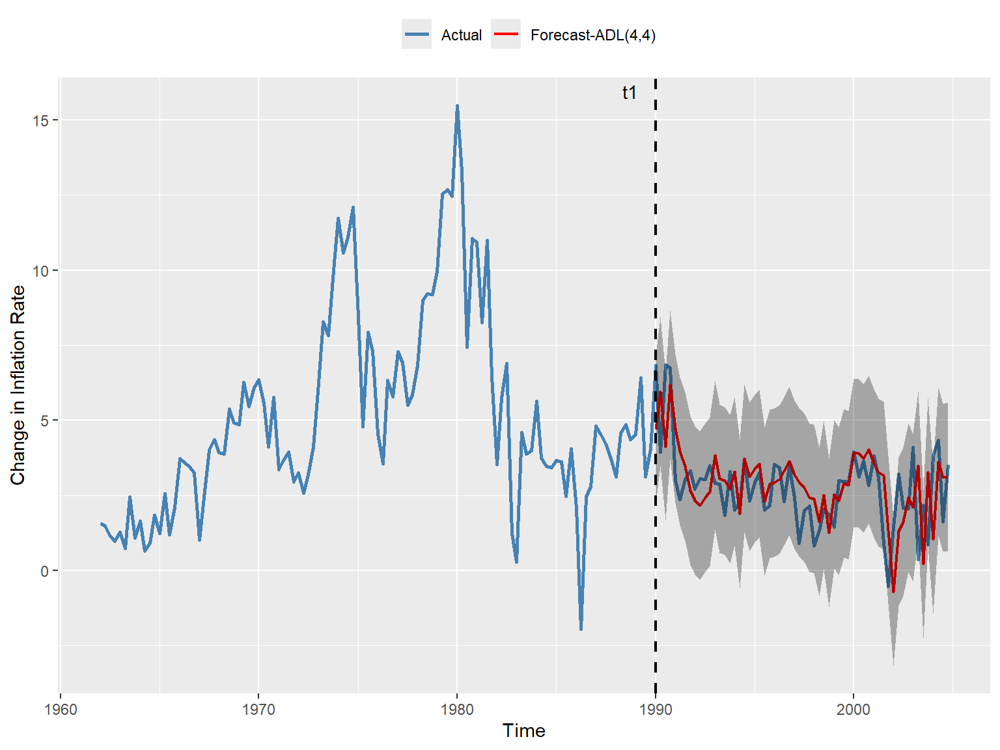
24.12 Nonstationarity
The second assumption for the OLS estimator requires that the random variables \((Y_t, X_{1t}, \dots, X_{mt})\) are stationary. In the absence of this assumption, forecasts, hypothesis tests, and confidence intervals become unreliable.
We begin by investigating the necessary and sufficient conditions under which the AR(1) model is weakly stationary. To this end, consider the following AR(1) process (with no intercept for simplicity): \[ Y_t = \beta_1 Y_{t-1} + u_t, \]
where \(u_t\)’s are uncorrelated error terms with mean zero and variance \(\sigma^2_u\). Then, by (continuous) backward substitution, we can write \(Y_t\) as \[ \begin{align*} Y_t &= \beta_1 Y_{t-1} + u_t \\ &= \beta_1(\beta_1 Y_{t-2} + u_{t-1}) + u_t=\beta_1^2Y_{t-2}+\beta_1u_{t-1} + u_t\\ &= \beta_1^2(\beta_1 Y_{t-3} + u_{t-2}) +\beta_1u_{t-1} + u_t\\ &=\beta_1^3Y_{t-3}+\beta_1^2u_{t-2}+\beta_1u_{t-1} + u_t\\ &\quad\vdots\\ &=\sum_{j=0}^{\infty}\beta_1^ju_{t-j}. \end{align*} \tag{24.20}\]
Hence, \(Y_t\) is a weighted average of the current and past error terms. To show that \(Y_t\) is weakly stationary, it suffices to demonstrate that the means and the variance-covariance matrix of \((Y_{s+1}, Y_{s+2}, \dots, Y_{s+T})\) do not depend on \(s\).
For simplicity, assume that \(T=2\). Hence, we need to show that \(\E(Y_t)\) and \(\text{var}(Y_t)\) do not depend on \(t\), and \(\text{cov}(Y_{s+1},Y_{s+2})\) does not depend on \(s\). Using Equation 24.20, we have \[ \text{E}(Y_t)=\text{E}\left(\sum_{j=0}^{\infty}\beta_1^ju_{t-j}\right)=\sum_{j=0}^{\infty}\beta_1^j\text{E}(u_{t-j})=0. \tag{24.21}\]
Assume also that \(|\beta_1|<1\). Then, since \(u_t\) are uncorrelated, we have \[ \begin{align*} \text{var}(Y_t)&=\text{var}\left(\sum_{j=0}^{\infty}\beta_1^ju_{t-j}\right)=\sum_{j=0}^{\infty}(\beta_1^j)^2\text{var}(u_{t-j})\\ &=\sigma_u^2\sum_{j=0}^{\infty}(\beta_1^j)^2=\frac{\sigma_u^2}{1-\beta_1^2}. \end{align*} \tag{24.22}\]
It follows from Equation 24.21 that \(\text{cov}(Y_{s+1},Y_{s+2})=\text{E}(Y_{s+1}Y_{s+2})\). Then, using \(Y_{s+2}=\beta_1Y_{s+1}+u_{s+2}\), we can determine \(\text{cov}(Y_{s+1},Y_{s+2})\) as follows: \[ \begin{align*} \text{cov}(Y_{s+1},Y_{s+2})&= \text{E}(Y_{s+1}(\beta_1Y_{s+1}+u_{s+2}))\\ &=\beta_1\text{E}(Y_{s+1}^2) + \text{E}(Y_{s+1}u_{s+2})=\beta_1\text{var}(Y_{s+1})\\ &=\beta_1\frac{\sigma_u^2}{1-\beta_1^2}. \end{align*} \tag{24.23}\]
Therefore, we conclude that \((Y_{s+1},Y_{s+2})\) is stationary if \(|\beta_1|<1\). We can use similar arguments to show that the distribution of \((Y_{s+1},Y_{s+2},\dots, Y_{s+T})\) does not depend on \(s\) when \(T>2\).
If stationarity does not hold, the series is said to be nonstationary. Nonstationarity can arise from two frequently encountered reasons: (i) trends (deterministic or stochastic) and (ii) structural breaks.
24.12.1 Trends
A persistent long-term movement in a time series is called a trend. The trend can be deterministic or stochastic. A deterministic trend is nonrandom, and is a deterministic function of time, e.g., \(Y_t = \alpha_0+\alpha_1 t\) or \(Y_t = \alpha_0+\alpha_1 t^2\), where \(\alpha_0\) and \(\alpha_1\) are coefficients. In contrast, a stochastic trend is random and varies over time. An important example of a stochastic trend is the following specific case of the AR(1) model: \[ \begin{align*} Y_t &= Y_{t-1} + u_t, \end{align*} \]
where \(u_t\) are uncorrelated error terms with \(\E(u_t|Y_{t-1},Y_{t-2},\ldots)=0\). This model is called the random-walk model (without a drift). It simply indicates that the value of \(Y\) tomorrow is the value of \(Y\) today plus an unpredictable error. There are two key features of the random walk model:
\(\E(Y_t|Y_{t-1},Y_{t-2},\ldots)=Y_{t-1}\) because \(\E(u_t|Y_{t-1},Y_{t-2},\ldots)=0\). Thus, the best prediction of the value of \(Y\) in the future is the value of \(Y\) today: \(Y_{T+h|T}=Y_T\).
It can be written as \(Y_t=Y_0+\sum_{s=1}^tu_s\). Assuming \(Y_0=0\), it follows that \(\E(Y_t)=0\) and \(\text{var}(Y_t) = t \sigma_u^2\), where \(\sigma_u^2\) is the variance of \(u_t\).
As an example, we consider the following three series: the log of U.S. real GDP, the U.S. inflation rate, and the dollar/pound exchange return (FX return) rate. The time series plots of these series are shown in Figure 24.12. Which of these series are likely nonstationary?
# Import data
dfMacro <- read_excel(
"data/us_macro_quarterly.xlsx",
sheet = 1,
col_names = TRUE,
skip = 0
)
# Log of real GDP
dfMacro$LogGDP <- log(dfMacro$GDPC96)
# Inflation (annualized quarterly percentage change)
dfMacro$Inflation <- 400 * (log(dfMacro$CPIAUCSL) - log(dplyr::lag(dfMacro$CPIAUCSL, 1)))
# FX return (log difference)
dfMacro$FXreturn <- log(dfMacro$EXUSUK) - log(dplyr::lag(dfMacro$EXUSUK, 1))# Convert Date to yearqtr
dfMacro$Date <- as.yearqtr(dfMacro$Quarter, format = "%Y:0%q")
# Plot of log real GDP
p1 <- ggplot(dfMacro, aes(x = Date, y = LogGDP)) +
geom_line(color = "steelblue", linewidth = 1) +
labs(title = "Log of Real GDP", x = "Date", y = "Log(GDPC96)")
# Plot of Inflation
p2 <- ggplot(dfMacro, aes(x = Date, y = Inflation)) +
geom_line(color = "steelblue", linewidth = 1) +
# Horizontal line at zero
geom_hline(yintercept = 0, linetype = "dashed", color = "black") +
labs(title = "Inflation Rate", x = "Date", y = "Inflation (%)")
# Plot of FX return
p3 <- ggplot(dfMacro, aes(x = Date, y = FXreturn)) +
geom_line(color = "steelblue", linewidth = 1) +
# Horizontal line at zero
geom_hline(yintercept = 0, linetype = "dashed", color = "black") +
labs(title = "Dollar/Pound Exchange Rate Return", x = "Date", y = "FX Return")
# Combine plots
grid.arrange(p1, p2, p3, ncol = 1)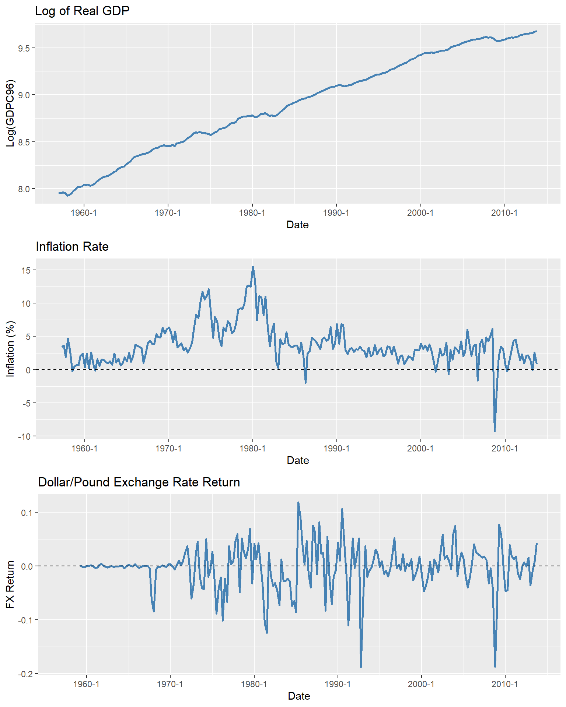
Figure 24.12 shows that the log of the U.S. real GDP exhibits an upward trend. It appears that the log of real GDP fluctuates around a linear trend. The U.S. inflation rate shows long-term swings, with periods of persistently high levels (e.g., the 1970s and early 1980s) and periods of persistently low levels. Therefore, the U.S. inflation rate is a candidate for having a stochastic trend. On the other hand, the FX returns show no apparent trend. While there are periods of persistently high volatility, this does not constitute a trend. Based on these observations, the log of real GDP and the inflation rate are clearly not stationary, whereas the FX returns appear to be stationary.
Next, to better visualize the behavior of a random-walk process over time, we simulate 8 random-walk processes (without a drift) over 100 periods. Figure 24.13 shows the simulated random-walk processes. We observe that the random walk processes wander up and down and do not revert to a mean.
# Set some parameters for simulation
set.seed(123)
n_sim <- 8
n_periods <- 100
# Simulate random walk processes
random_walks <- matrix(NA, nrow = n_periods, ncol = n_sim)
for (i in 1:n_sim) {
u <- rnorm(n_periods, mean = 0, sd = 1)
random_walks[, i] <- cumsum(u) # Cumulative sum to create random walk
}
# Convert to data frame for plotting
df_random_walks <- as.data.frame(random_walks)
df_random_walks$Time <- 1:n_periods
# Plot
ggplot(df_random_walks, aes(x = Time)) +
geom_line(aes(y = V1, color = "Sim 1"), linewidth = 1) +
geom_line(aes(y = V2, color = "Sim 2"), linewidth = 1) +
geom_line(aes(y = V3, color = "Sim 3"), linewidth = 1) +
geom_line(aes(y = V4, color = "Sim 4"), linewidth = 1) +
geom_line(aes(y = V5, color = "Sim 5"), linewidth = 1) +
geom_line(aes(y = V6, color = "Sim 6"), linewidth = 1) +
geom_line(aes(y = V7, color = "Sim 7"), linewidth = 1) +
geom_line(aes(y = V8, color = "Sim 8"), linewidth = 1) +
geom_hline(yintercept = 0, linetype = "dashed", color = "black") +
labs(title = "Simulated Random Walk Processes", x = "Time", y = "Value") +
theme(legend.position = "none")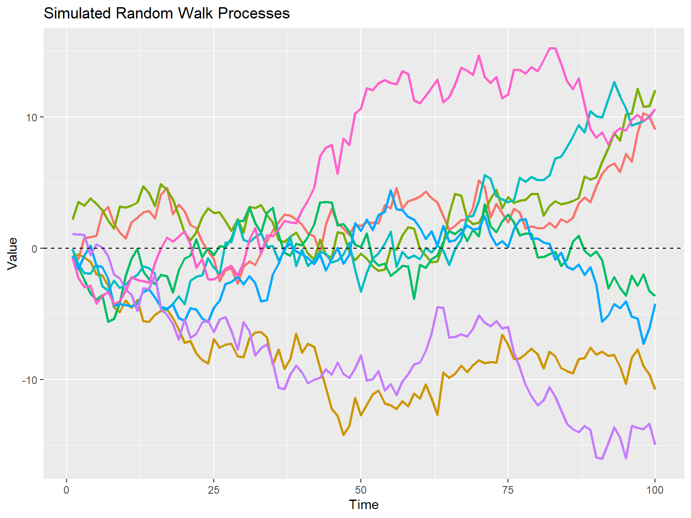
The random-walk with drift model is a another important example of a stochastic trend. It is defined as follows: \[ Y_t = \beta_0 + Y_{t-1} + u_t, \] where \(u_t\) are uncorrelated error terms with mean zero and variance \(\sigma_u^2\), and \(\beta_0\) is the drift term. We can alternatively express the random walk with drift process as \(Y_t=Y_0+\beta_0 t+\sum_{s=1}^tu_s\), which is derived from backward substitution. Thus, if \(\beta_0 \ne 0\), then \(Y\) follows a random walk around a linear trend. It can also be shown that the \(h\)-step ahead forecast at period \(T\) is \[ Y_{T+h|T} = \beta_0 h + Y_{T}. \]
To visualize how a random-walk process with drift evolves over time, we next simulate 8 random-walk processes with a drift for 100 periods. Figure 24.14 shows the simulated random-walk with drift processes. The black dashed line represents the linear trend \(Y_t=\beta_0t\) around which the random-walk processes fluctuate.
set.seed(123) # For reproducibility
n_sim <- 8
n_periods <- 100
beta_0 <- 0.45 # Drift term
# Simulate random walk processes with drift
random_walks_drift <- matrix(NA, nrow = n_periods, ncol = n_sim)
for (i in 1:n_sim) {
u <- rnorm(n_periods, mean = 0, sd = 1) # Random shocks
random_walks_drift[, i] <- beta_0 * (1:n_periods) + cumsum(u) # Add drift to random walk
}
# Convert to data frame for plotting
df_random_walks_drift <- as.data.frame(random_walks_drift)
df_random_walks_drift$Time <- 1:n_periods
# Plot
ggplot(df_random_walks_drift, aes(x = Time)) +
geom_line(aes(y = V1, color = "Sim 1"), linewidth = 1) +
geom_line(aes(y = V2, color = "Sim 2"), linewidth = 1) +
geom_line(aes(y = V3, color = "Sim 3"), linewidth = 1) +
geom_line(aes(y = V4, color = "Sim 4"), linewidth = 1) +
geom_line(aes(y = V5, color = "Sim 5"), linewidth = 1) +
geom_line(aes(y = V6, color = "Sim 6"), linewidth = 1) +
geom_line(aes(y = V7, color = "Sim 7"), linewidth = 1) +
geom_line(aes(y = V8, color = "Sim 8"), linewidth = 1) +
# Add linear trend line
geom_line(aes(y = beta_0 * Time), color = "black", linetype = "dashed", linewidth = 1) +
labs(title = "Simulated Random Walk Processes with Drift", x = "Time", y = "Value") +
theme(legend.position = "none")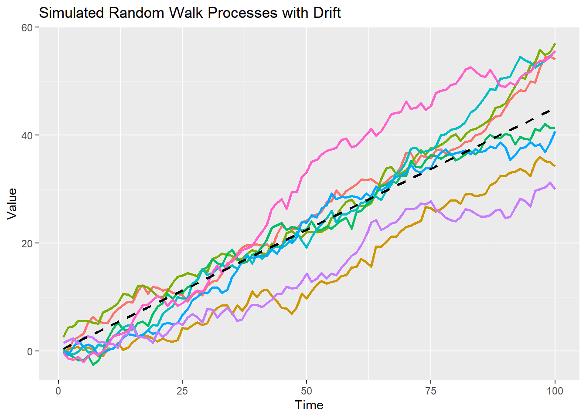
24.12.2 Unit-root processes
When \(Y\) has a stochastic trend, it is often said that \(Y\) has a unit root. To understand where this terminology comes from, we first need to define the lag operator and lag polynomials formally. Let \(L\) denote the lag operator, defined by \(LY_t = Y_{t-1}\) and, more generally, by \(L^j Y_t = Y_{t-j}\) for \(j \geq 1\), where \(j \in \mathbb{N}\). The lag operator allows us to define the lag polynomial as \[ a(L) = a_0 + a_1L + a_2L^2 + \cdots + a_pL^p = \sum_{j=0}^p a_j L^j, \]
where \(a_0,a_1,\dots,a_p\) are the coefficients of the lag polynomial and \(L^0=1\). The degree of the lag polynomial \(a(L)\) is \(p\).
Pre-multiplying \(Y_t\) with \(a(L)\) yields \[ \begin{align*} a(L)Y_t &= \left(\sum_{j=0}^p a_j L^j\right)Y_t = \sum_{j=0}^p a_j L^jY_t = \sum_{j=0}^p a_j Y_{t-j}\\ &=a_0Y_t+a_1Y_{t-1}+\cdots+a_pY_{t-p}. \end{align*} \]
Hence, the AR(\(p\)) model can be written as \[ a(L)Y_t = \beta_0 + u_t, \]
where \(a_0=1\) and \(a_j = -\beta_j\) for \(j=1,2,\dots, p\). Similarly, the ADL(p,q) model can be written as \[ a(L)Y_t = \beta_0 + b(L)X_{t-1} + u_t, \]
where \(a(L)\) and \(b(L)\) are lag polynomials of order \(p\) and \(q-1\), respectively.
The unit root terminology stems from the roots of the lag polynomial. Consider the AR(1) model: \[ (1 - \beta_1 L)Y_t = \beta_0 + u_t. \] Here, \(a(L)=1-\beta L\). Let \(z\) be the root of \(a(L)\), i.e., \(a(z)=0\). Then, we necessarily have \[ 1 - \beta_1 z = 0, \]
which implies that \(z=1/\beta_1\). When \(\beta_1=1\), we have \(z=1\), and the process is said to have a unit root (it is a random walk with drift in this case).
We can generalize this argument to the AR(p) model, where the roots of the polynomial solves \[ 1 - \beta_1 z - \beta_2 z^2 - \beta_3 z^3 - \cdots - \beta_p z^p = 0. \]
For the AR(p) model to be stationary, the roots of this polynomial must all be greater than \(1\) in absolute value (lie outside the unit circle). For example, the stationarity condition for the AR(1) model was \(|\beta_1|<1\), which implies that \(|z|>1\).
In the AR(1) model, if \(Y\) has a unit root, then its first difference becomes stationary because \(\Delta Y_t = Y_t - Y_{t-1} = (1 - \beta_1 L)Y_t = \beta_0+u_t\). Hence, the first difference of a unit-root process is stationary. This is the reason why we often take first differences of nonstationary series to make them stationary.
24.12.3 Problems caused by stochastic trends
Recall that the OLS estimator requires the random variables \((Y_t, X_{1t}, \dots, X_{mt})\) to be stationary. If the series contain a stochastic trend, the OLS estimator can be misleading. Moreover, the t-statistic does not follow the standard normal distribution, even in large samples. If \(Y\) and \(X\) are independent unit-root processes, they may appear related in regressions, a phenomenon known as spurious regressions.
In the next example, we simulate a random walk process and estimate an AR(1) model using the OLS estimator. We repeat this simulation 1,000 times for three different sample sizes: 100, 500, and 1,000. In each simulation, we estimate the AR(1) model and record the estimate of the AR(1) coefficient, bias, and the t-statistic for testing the null hypothesis that the AR(1) coefficient is zero.
In Table 24.12, we present the average coefficient estimate, average bias, and average t-statistic for each sample size. The simulation results show that the OLS estimator exhibits a negative bias, and the magnitude of this bias decreases as the sample size increases. Also, the average t-statistic increases as the sample size grows. Figure 24.15 shows histograms of the estimates and t-statistics. These histograms indicate that the finite-sample distribution of the OLS estimator is left-skewed, while that of the t-statistic is right-skewed. Both finite sample distributions deviate from normality. Therefore, inference based on the standard normal distribution is not valid in the presence of a stochastic trend even when the sample size is large.
# Function to simulate AR(1) process and estimate parameters
simulate_ar1 <- function(n, n_simulations) {
estimates <- numeric(n_simulations)
biases <- numeric(n_simulations)
t_stats <- numeric(n_simulations)
set.seed(42)
for (i in seq_len(n_simulations)) {
e <- rnorm(n)
y <- cumsum(e)
y_lag <- lag(y, 1)
model <- lm(y ~ y_lag)
estimates[i] <- coef(model)[2]
biases[i] <- estimates[i] - 1 # true beta = 1 for random walk
t_stats[i] <- summary(model)$coefficients[2, "t value"]
}
list(estimates = estimates, biases = biases, t_stats = t_stats)
}
# Parameters
sample_sizes <- c(100, 500, 1000)
n_simulations <- 1000
# Data frame to store results
results <- data.frame(
`Sample Size` = integer(0),
`Mean Estimate` = numeric(0),
`Mean Bias` = numeric(0),
`Mean t-Statistic` = numeric(0),
stringsAsFactors = FALSE
)
# Run simulations for each sample size
for (n in sample_sizes) {
sim <- simulate_ar1(n, n_simulations)
new_row <- data.frame(
`Sample Size` = n,
`Mean Estimate` = mean(sim$estimates),
`Mean Bias` = mean(sim$biases),
`Mean t-Statistic` = mean(sim$t_stats)
)
results <- rbind(results, new_row)
}column_names <- c("Sample Size", "Mean Estimate", "Mean Bias", "Mean t-Statistic")
kable(results, digits = 3, col.names = column_names)| Sample Size | Mean Estimate | Mean Bias | Mean t-Statistic |
|---|---|---|---|
| 100 | 0.949 | -0.051 | 36.944 |
| 500 | 0.990 | -0.010 | 190.349 |
| 1000 | 0.995 | -0.005 | 371.101 |
p_list <- list()
for (i in seq_along(sample_sizes)) {
n <- sample_sizes[i]
sim <- simulate_ar1(n, n_simulations)
df_plot <- tibble(Estimate = sim$estimates, tStatistic = sim$t_stats)
p_list[[2*i - 1]] <- ggplot(df_plot, aes(Estimate)) +
geom_histogram(bins = 30, fill = "steelblue", color = "black") +
labs(title = paste("Sample size:", n), x = "Estimatess", y = "Frequency")
p_list[[2*i]] <- ggplot(df_plot, aes(tStatistic)) +
geom_histogram(bins = 30, fill = "lightcoral", color = "black") +
labs(title = paste("Sample size:", n), x = "t-statistics", y = "Frequency")
}
grid.arrange(grobs = p_list, ncol = 2)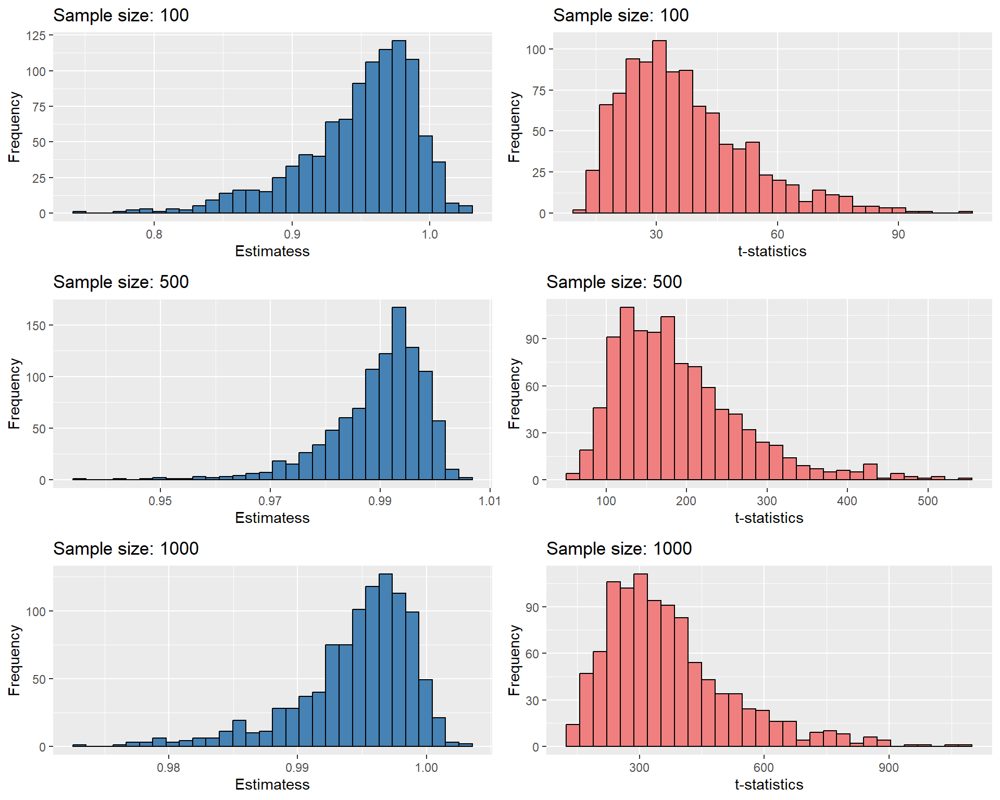
In the next example, we use a simulation study to illustrate the spurious regression phenomenon. We generate \(Y\) and \(X\) from independent random walk with drift processes and estimate the following regression model: \(Y_t=\beta_0+\beta_1X_t+u_t\). We repeat this simulation 1,000 times for three different sample sizes: 100, 500, and 1,000. In each simulation, we estimate the regression model and record the slope coefficient estimate, bias, and the \(t\)-statistic for testing the null hypothesis that the slope coefficient is zero.
The simulation results are presented in Table 24.13. The OLS estimator reports large positive bias, and the bias does not decrease as the sample size increases. The \(t\)-statistics are also large, indicating a statistically significant relationship between \(Y\) and \(X\). Figure 24.16 shows histograms of the estimates and t-statistics.
# Function to simulate spurious regression
simulate_spurious_regression <- function(n, n_simulations) {
estimates <- numeric(n_simulations)
t_stats <- numeric(n_simulations)
set.seed(142) # for reproducibility
for (i in 1:n_simulations) {
# Generate two independent random walks
e1 <- rnorm(n, mean = 0, sd = 1)
y1 <- cumsum(e1) + 0.2 * (1:n) # random walk with drift
e2 <- rnorm(n, mean = 0, sd = 1)
y2 <- cumsum(e2) + 0.5 * (1:n) # another random walk with drift
# Estimate regression model y1 ~ y2
model <- lm(y1 ~ y2)
# Record coefficient and t-statistic
estimates[i] <- coef(model)[2]
t_stats[i] <- summary(model)$coefficients[2, "t value"]
}
list(estimates = estimates,
biases = estimates, # same as estimates
t_stats = t_stats)
}
# Parameters
sample_sizes <- c(100, 500, 1000)
n_simulations <- 1000
# Data frame to store results
results <- data.frame(
`Sample Size` = integer(),
`Mean Estimate` = numeric(),
`Mean Bias` = numeric(),
`Mean t-Statistic` = numeric()
)
# Run simulations for each sample size
for (n in sample_sizes) {
sim <- simulate_spurious_regression(n, n_simulations)
new_row <- data.frame(
`Sample Size` = n,
`Mean Estimate` = mean(sim$estimates),
`Mean Bias` = mean(sim$biases),
`Mean t-Statistic` = mean(sim$t_stats)
)
results <- rbind(results, new_row)
}column_names <- c("Sample Size", "Mean Estimate", "Mean Bias", "Mean t-Statistic")
kable(results, digits = 3, col.names = column_names)| Sample Size | Mean Estimate | Mean Bias | Mean t-Statistic |
|---|---|---|---|
| 100 | 0.398 | 0.398 | 21.687 |
| 500 | 0.404 | 0.404 | 115.095 |
| 1000 | 0.404 | 0.404 | 235.873 |
# Sample sizes and number of simulations
sample_sizes <- c(100, 500, 1000)
n_simulations <- 1000
# List to store plots
plot_list <- list()
for (n in sample_sizes) {
sim <- simulate_spurious_regression(n, n_simulations)
# Histogram of estimates
p_est <- ggplot(data.frame(Value = sim$estimates), aes(x = Value)) +
geom_histogram(bins = 30, fill = "steelblue", color = "black") +
labs(title = paste("Sample size:", n), x = "Estimate", y = "Frequency") +
theme(plot.title = element_text(size = 10))
# Histogram of t-statistics
p_t <- ggplot(data.frame(Value = sim$t_stats), aes(x = Value)) +
geom_histogram(bins = 30, fill = "lightcoral", color = "black") +
labs(title = paste("Sample size:", n), x = "t-Statistic", y = "Frequency") +
theme(plot.title = element_text(size = 10))
plot_list <- c(plot_list, list(p_est, p_t))
}
# Arrange the 6 plots in a 3x2 grid
grid.arrange(grobs = plot_list, nrow = 3, ncol = 2)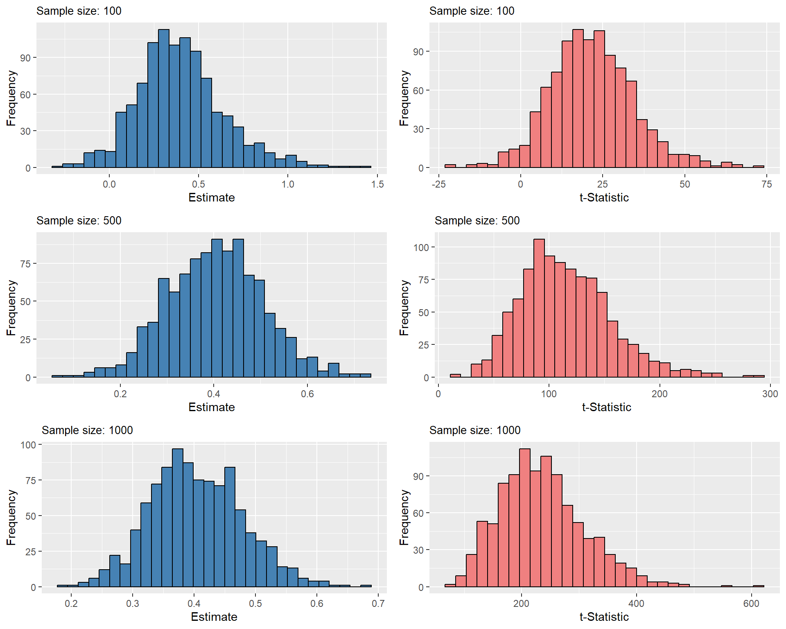
24.12.4 How to detect stochastic trends?
The plot of time series data may help detecting a stochastic trend. We may look for persistent long-run movements. We can also use a regression-based test for a stochastic trend, e.g., the augmented Dickey-Fuller test.
Consider the following AR(1) process: \(Y_t = \beta_0 + \beta_1Y_{t-1} + u_t\). Subtracting \(Y_{t-1}\) from both sides, we obtain \[ \Delta Y_t = \beta_0 + \delta Y_{t-1} + u_t, \tag{24.24}\] where \(\delta = \beta_1 - 1\). If \(Y_t\) indeed has a unit root, that is \(\beta_1=1\), then \(\delta = 0\). Therefore, the null hypothesis for the Dickey-Fuller test is \(H_0:\delta = 0\) (random walk), and the alternative is \(H_1:\delta < 0\) (stationarity). Hence, the Dickey-Fuller test is a one-sided test.
Now, consider the AR(2) process: \(Y_t = \beta_0 + \beta_1Y_{t-1} + \beta_2Y_{t-2} + u_t\). We can rewrite this process as \[ \begin{align*} Y_t &= \beta_0 + \beta_1Y_{t-1} +\beta_2Y_{t-2} + u_t\\ &= \beta_0 + \beta_1Y_{t-1} +\beta_2Y_{t-1} -\beta_2Y_{t-1} +\beta_2Y_{t-2} + u_t\\ &=\beta_0+(\beta_1+\beta_2)Y_{t-1}-\beta_2(Y_{t-1} - Y_{t-2}) + u_t \end{align*} \]
Subtracting \(Y_{t-1}\) from both sides, we obtain \[ \begin{align*} \Delta Y_t &= \beta_0 + (\beta_1+\beta_2-1)Y_{t-1} - \beta_2\Delta Y_{t-1} + u_t\\ &=\beta_0 + \delta Y_{t-1} + \gamma_1 \Delta Y_{t-1} + u_t, \end{align*} \tag{24.25}\] where \(\delta=\beta_1+\beta_2-1\) and \(\gamma_1 = -\beta_2\). Also, note that the AR(2) model can be written as \[ (1 - \beta_1 L -\beta_2L^2)Y_t = \beta_0 + u_t. \]
Denote the roots of the lag polynomial with \(z\). Then, necessarily, we have \[ 1 - \beta_1 z -\beta_2z^2 = 0. \]
Clearly, if one of the roots is unity, then \(\beta_1+\beta_2=1\). In that case \(\delta = 0\), and the AR(2) process becomes \[ \Delta Y_t = \beta_0 + \gamma \Delta Y_{t-1} + u_t. \]
Hence, if an AR(2) process has a unit root, it can be written as an AR(1) process in the first differences.
We can use Equation 24.25 to test for stationarity in the AR(2) model. The null hypothesis for the Dickey-Fuller test is \(H_0:\delta = 0\) (unit root), and the alternative is \(H_1:\delta < 0\) (stationary).
Using similar arguments, the discussion can be generalized to AR(p) processes: \[ \Delta Y_t = \beta_0 + \delta Y_{t-1} + \gamma_1 \Delta Y_{t-1} + \gamma_2 \Delta Y_{t-2} + \cdots + \gamma_{p-1}\Delta Y_{t-p+1}+ u_t, \tag{24.26}\]
where \(\delta = \beta_1 + \beta_2 +\cdots+\beta_p -1\), \(\gamma_1 = -(\beta_2 +\beta_3+\cdots+\beta_p)\), \(\gamma_2 = -(\beta_3 +\beta_4+\cdots+\beta_p)\) and so on, with \(\gamma_{p-1} = -\beta_p\). Also, in this case, the null hypothesis is \(H_0:\delta = 0\) (unit root), and the alternative is \(H_1:\delta < 0\) (stationary).
The Dickey-Fuller test statistic is simply the OLS \(t\)-statistic for testing \(H_0:\delta = 0\). In particular, the t-statistic for testing \(H_0:\delta = 0\) in Equation 24.26 is called the augmented Dickey-Fuller (ADF) statistic.
Under the alternative hypothesis, we assume that the series is stationary. For the time series that have a time trend, it is more appropriate to assume that the series is stationary around a deterministic trend. In this case, the model is augmented with a time trend: \[ \Delta Y_t = \beta_0+ \alpha t + \delta Y_{t-1} + \gamma_1 \Delta Y_{t-1} + \gamma_2 \Delta Y_{t-2} + \cdots + \gamma_{p-1}\Delta Y_{t-p+1} + u_t, \tag{24.27}\] where \(\alpha\) is the coefficient of the time trend. In this case, the null hypothesis is \(H_0:\delta = 0\) (unit root), and the alternative is \(H_1:\delta < 0\) (stationary around a deterministic time trend). The augmented Dickey-Fuller test statistic for testing \(H_0:\delta = 0\) in Equation 24.27 is again the OLS t-statistic.
In practice, we use either Equation 24.26 or Equation 24.27, depending on whether we suspect a deterministic trend in the series. In either case, the lag length \(𝑝\) is selected based on information criteria. The econometric literature suggests that including too many lags is preferable to including too few. Therefore, it is recommended to use the AIC rather than the BIC when estimating \(p\) for the ADF statistic. In conducting the test, we cannot resort to the critical values obtained from the standard normal distribution even in large samples. The reason is that under \(H_0\), the augmented Dickey-Fuller statistic is not normally distributed. See Chapter 16 in Hansen (2022) for the distribution of the the Dickey-Fuller test. We need to resort to simulation methods to determine the critical values from the finite sample distribution of the t-statistic.
Since the null distribution of the Dickey-Fuller test statistic (t-statistic) is not standard normal, even in large samples, the critical values must be obtained through simulation methods. To this end, we can use the ur.df function from the urca package to implement the test and tabulate the critical values using a simulation study. In the following example, we simulate a random walk process and estimate the ADF statistic. We repeat this simulation 1,000 times for each model and calculate the critical values at the 1%, 5%, and 10% significance levels. The simulation results are presented in Table 24.14. Note that these critical values are obtained from the finite sample distribution of the ADF statistic. They are substantially different from the critical values obtained from the standard normal distribution. The histograms of the ADF statistics are shown in Figure 24.17. In these histograms, the solid green, red and gold vertical lines represent the critical values at the 1%, 5%, and 10% significance levels, respectively. The histograms indicate that the finite-sample distribution of the ADF statistic is left-skewed and deviates from normality.
# Parameters
n_simulations <- 1000
n <- 100
# Storage
adf_c <- numeric(n_simulations)
adf_ct <- numeric(n_simulations)
for (i in 1:n_simulations) {
# Simulate random walk
y <- cumsum(rnorm(n))
# Intercept only
res_c <- ur.df(y, type = "drift", lags = 1)
adf_c[i] <- res_c@teststat[1, 1]
# Intercept + trend
res_ct <- ur.df(y, type = "trend", lags = 1)
adf_ct[i] <- res_ct@teststat[1, 1]
}# Create a data frame for the results
adf_results <- data.frame(
Model = c("Intercept only", "Intercept + trend"),
`1% Critical Value` = c(quantile(adf_c, 0.01), quantile(adf_ct, 0.01)),
`5% Critical Value` = c(quantile(adf_c, 0.05), quantile(adf_ct, 0.05)),
`10% Critical Value` = c(quantile(adf_c, 0.10), quantile(adf_ct, 0.10))
)
# Display the results in a table
column_names <- c(
"Model",
"1% Critical Value",
"5% Critical Value",
"10% Critical Value"
)
kable(adf_results, digits = 3, col.names = column_names)| Model | 1% Critical Value | 5% Critical Value | 10% Critical Value |
|---|---|---|---|
| Intercept only | -3.534 | -2.857 | -2.572 |
| Intercept + trend | -4.106 | -3.462 | -3.083 |
# Convert to data frames
df_c <- data.frame(value = adf_c)
df_ct <- data.frame(value = adf_ct)
# Empirical critical values
percentiles_intercept_only <- quantile(
adf_c,
probs = c(0.01, 0.05, 0.10)
)
percentiles_intercept_trend <- quantile(
adf_ct,
probs = c(0.01, 0.05, 0.10)
)
# Intercept only
p1 <- ggplot(df_c, aes(x = value)) +
geom_histogram(bins = 50, fill = "steelblue", color = "black") +
geom_vline(
xintercept = percentiles_intercept_only[2],
color = "red",
linetype = "solid",
linewidth = 0.8
) +
geom_vline(
xintercept = percentiles_intercept_only[1],
color = "green",
linetype = "solid",
linewidth = 0.8
) +
geom_vline(
xintercept = percentiles_intercept_only[3],
color = "gold",
linetype = "solid",
linewidth = 0.8
) +
labs(
title = "ADF Statistic Distribution - Intercept Only",
x = "ADF Statistic",
y = "Frequency"
)
# Intercept + trend
p2 <- ggplot(df_ct, aes(x = value)) +
geom_histogram(bins = 50, fill = "steelblue", color = "black") +
geom_vline(
xintercept = percentiles_intercept_trend[2],
color = "red",
linetype = "solid",
linewidth = 0.8
) +
geom_vline(
xintercept = percentiles_intercept_trend[1],
color = "green",
linetype = "solid",
linewidth = 0.8
) +
geom_vline(
xintercept = percentiles_intercept_trend[3],
color = "gold",
linetype = "solid",
linewidth = 0.8
) +
labs(
title = "ADF Statistic Distribution - Intercept and Trend",
x = "ADF Statistic",
y = "Frequency"
)
# Arrange side-by-side
grid.arrange(p1, p2, ncol = 2)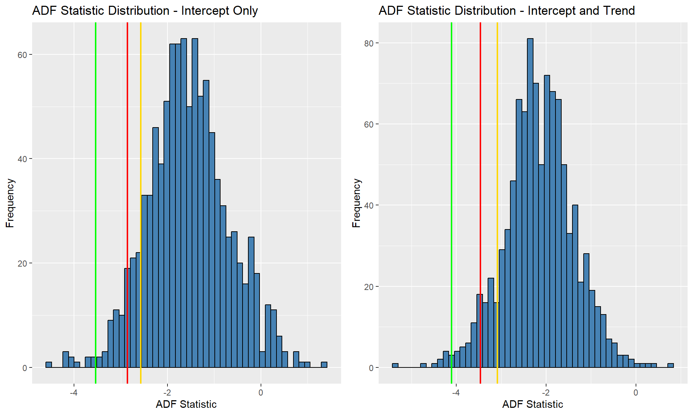
In the above simulation study, we use the ur.df function to compute the ADF statistic for each simulated random walk process. The ur.df function estimates the ADF regression and computes the test statistic. Its syntax is as follows:
ur.df(
y,
type = c("none", "drift", "trend"),
lags = 1,
selectlags = c("Fixed", "AIC", "BIC")
)The type argument specifies the type of ADF regression. The options are none, drift, and trend. The none option does not include any deterministic term in the ADF regression. The drift option includes only the intercept term, while the trend option includes both the intercept and the time trend. The lags argument specifies the number of lags to be included in the ADF regression. The selectlags argument specifies how to select the number of lags. We can use either Fixed, AIC, or BIC. The Fixed option uses a fixed number of lags, while the AIC and BIC options use the Akaike Information Criterion (AIC) and Bayesian Information Criterion (BIC) to select the number of lags.
In the next example, we will implement the Dickey-Fuller test for a unit root in the log of the U.S. real GDP. Since the log real GDP has an upward trend, we include a time trend in the regression. The regression model is as follows: \[ \Delta Y_t = \beta_0 + \alpha t + \delta Y_{t-1} + \gamma_1 \Delta Y_{t-1} + \gamma_2 \Delta Y_{t-2} + u_t, \] where \(Y_t\) is the log of the real GDP. The null hypothesis is that the log GDP has a unit root, and the alternative hypothesis is that the log GDP is stationary around a deterministic trend: \[ \begin{align*} H_0: &\delta = 0 \quad \text{(log GDP has a unit root)}\\ H_1: &\delta < 0 \quad \text{(log GDP is stationary around a deterministic trend)}. \end{align*} \]
# ADF test for log real GDP
adf_result <- ur.df(dfGrowth$Y, type = "trend", lags = 2, selectlags = "Fixed")
summary(adf_result)
###############################################
# Augmented Dickey-Fuller Test Unit Root Test #
###############################################
Test regression trend
Call:
lm(formula = z.diff ~ z.lag.1 + 1 + tt + z.diff.lag)
Residuals:
Min 1Q Median 3Q Max
-0.025943 -0.003969 0.000258 0.004426 0.032580
Coefficients:
Estimate Std. Error t value Pr(>|t|)
(Intercept) 1.585e-01 7.474e-02 2.121 0.0350 *
z.lag.1 -1.871e-02 9.187e-03 -2.037 0.0428 *
tt 1.235e-04 6.915e-05 1.786 0.0755 .
z.diff.lag1 2.703e-01 6.544e-02 4.130 5.12e-05 ***
z.diff.lag2 1.678e-01 6.549e-02 2.562 0.0111 *
---
Signif. codes: 0 '***' 0.001 '**' 0.01 '*' 0.05 '.' 0.1 ' ' 1
Residual standard error: 0.007502 on 224 degrees of freedom
Multiple R-squared: 0.1787, Adjusted R-squared: 0.1641
F-statistic: 12.19 on 4 and 224 DF, p-value: 5.558e-09
Value of test-statistic is: -2.037 13.0003 4.3299
Critical values for test statistics:
1pct 5pct 10pct
tau3 -3.99 -3.43 -3.13
phi2 6.22 4.75 4.07
phi3 8.43 6.49 5.47The ur.df function reports the estimated regression model, the ADF test statistic, and the critical values at the 1%, 5%, and 10% significance levels. The ADF test statistic is -2.04. The critical values at the 1%, 5%, and 10% significance levels are -3.99, -3.42, and -3.14, respectively. Since the ADF statistic is greater than the critical value at the 5% significance level, we fail to reject the null hypothesis of a unit root in the log real GDP series.
Note that the ur.df function reports three test statistics: Value of test-statistic is: -2.037 13.0003 4.3299. These test statistics are respectively computed for the following null hypotheses: \[
\begin{align}
&H_0:\delta=0\\
&H_0: \delta=0,\,\alpha=0\\
&H_0:\delta=0,\,\beta_0=0.
\end{align}
\]
Thus, the first test statistic -2.037 is the one that we are interested in for testing the null hypothesis that the log real GDP has a unit root against the alternative that it is stationary around a deterministic time trend.
Next, we use the ADF test to decide whether the GDP growth rate (in percent at an annual rate) has a stochastic trend. Figure 24.10 shows the the time series plot of the GDP growth rate. Since the series does not has a deterministic trend, we will consider the ADF equation only with the intercept term: \[ \begin{align*} &\Delta{\tt GDPGR}_t=\beta_0+\delta{\tt GDPGR}_{t-1}+\gamma_1\Delta{\tt GDPGR}_{t-1}+u_t. \end{align*} \]
We use only one lag term \(\Delta\text{GDPGR}_{t-1}\) because the AIC suggests only one lag term as shown below. Also, we use type = "drift" option because we do not have a time trend in the ADF regression.
ADFtest2 = ur.df(dfGrowth$YGROWTH, type = "drift", selectlags = "AIC")
summary(ADFtest2)
###############################################
# Augmented Dickey-Fuller Test Unit Root Test #
###############################################
Test regression drift
Call:
lm(formula = z.diff ~ z.lag.1 + 1 + z.diff.lag)
Residuals:
Min 1Q Median 3Q Max
-10.3648 -1.6729 0.0161 1.8130 13.2237
Coefficients:
Estimate Std. Error t value Pr(>|t|)
(Intercept) 1.61993 0.29876 5.422 1.50e-07 ***
z.lag.1 -0.54212 0.07444 -7.282 5.34e-12 ***
z.diff.lag -0.16506 0.06437 -2.564 0.011 *
---
Signif. codes: 0 '***' 0.001 '**' 0.01 '*' 0.05 '.' 0.1 ' ' 1
Residual standard error: 3.04 on 227 degrees of freedom
Multiple R-squared: 0.3466, Adjusted R-squared: 0.3409
F-statistic: 60.22 on 2 and 227 DF, p-value: < 2.2e-16
Value of test-statistic is: -7.2824 26.517
Critical values for test statistics:
1pct 5pct 10pct
tau2 -3.46 -2.88 -2.57
phi1 6.52 4.63 3.81There are two test statistics: Value of test-statistic is: -7.2824 26.517. These test statistics are respectively computed for the following null hypotheses: \[
\begin{align}
&H_0:\delta=0\\
&H_0:\delta=0,\,\beta_0=0.
\end{align}
\]
Thus, the first test statistic -7.2824 is the one we are interested in. The reported critical values are -3.46, -2.88, and -2.57 for 1%, 5%, and 10% significance levels, respectively. The test statistic is -7.2824, which is less than the critical value -2.88 at 5% significance level. Therefore, we reject the null hypothesis that \(\text{GDPGR}_{t}\) has a unit root in favor of the alternative that it is stationary around a constant.
In the next example, we use the Dickey-Fuller test for testing a unit root in the U.S. inflation series. Since this series does not have a deterministic trend, we will consider the ADF equation only with the intercept term: \[ \begin{align*} \Delta{\tt Inflation}_t&=\beta_0+\delta{\tt Inflation}_{t-1}+\gamma_1\Delta{\tt Inflation}_{t-1}\\ & + \gamma_2\Delta{\tt Inflation}_{t-2}+ \gamma_3\Delta{\tt Inflation}_{t-3} + u_t. \end{align*} \]
The test statistic is -2.66, which is greater than the critical value -2.88 at 5% significance level. Therefore, we fail to reject the null hypothesis that the inflation series has a unit root.
df_subset <- window(tsInflation[, "Inflation"], start = c(1962, 1))
ADFtest3 = ur.df(
df_subset,
type = "drift",
selectlags = "Fixed",
lags = 3
)
summary(ADFtest3)
###############################################
# Augmented Dickey-Fuller Test Unit Root Test #
###############################################
Test regression drift
Call:
lm(formula = z.diff ~ z.lag.1 + 1 + z.diff.lag)
Residuals:
Min 1Q Median 3Q Max
-4.4382 -0.8014 0.0855 0.9225 3.8173
Coefficients:
Estimate Std. Error t value Pr(>|t|)
(Intercept) 0.50048 0.21838 2.292 0.02319 *
z.lag.1 -0.11308 0.04242 -2.666 0.00845 **
z.diff.lag1 -0.18581 0.08100 -2.294 0.02306 *
z.diff.lag2 -0.25373 0.07732 -3.282 0.00126 **
z.diff.lag3 0.20144 0.07719 2.610 0.00991 **
---
Signif. codes: 0 '***' 0.001 '**' 0.01 '*' 0.05 '.' 0.1 ' ' 1
Residual standard error: 1.525 on 164 degrees of freedom
Multiple R-squared: 0.2361, Adjusted R-squared: 0.2175
F-statistic: 12.67 on 4 and 164 DF, p-value: 5.221e-09
Value of test-statistic is: -2.666 3.5569
Critical values for test statistics:
1pct 5pct 10pct
tau2 -3.46 -2.88 -2.57
phi1 6.52 4.63 3.8124.12.5 Structural Breaks
The second type of nonstationarity we consider is that the coefficients of the model may not remain constant over the full sample. Clearly, this poses a serious problem for forecasting. We consider testing approaches to detect changes in the coefficients. There are two such approaches:
- a test for a known break date, and
- a test for an unknown break date.
24.12.6 Test for a known break date
Suppose the break is known to have occurred at date \(\tau\). Then, the stability of the model can be tested by a fully interacted regression model. For example, consider the ADL(1,1) model and let \(D_t(\tau)\) be the dummy variable for the periods after \(\tau\), i.e., \(D_t(\tau) = 0\) if \(t\le\tau\) and \(D_t(\tau) = 1\) if \(t>\tau\). We can estimate the following fully interacted regression ADL(1,1) specification: \[ Y_t = \beta_0 + \beta_1Y_{t-1} + \delta X_{t-1} + \gamma_0D_t(\tau) + \gamma_1 D_t(\tau)Y_{t-1} +\gamma_2D_t(\tau)X_{t-1} + u_t. \]
We can test for the joint significance of the interaction terms, i.e., \(H_0:\gamma_0 = \gamma_1 =\gamma_2 =0\). If we reject \(H_0\), then there is statistical evidence for a change at \(\tau\). We can compute a heteroskedasticity robust F-statistic to test this null. This approach is often called the Chow test.
The Chow test is restrictive because it requires the break date \(\tau\) to be known. Ideally, we would like to test the null hypothesis of coefficient stability against the general alternative that the coefficients are not stable.
24.12.7 Test for an unknown break date
To test for an unknown break date, we can use the Quandt Likelihood Ratio (QLR) statistic (also called the sup-Wald statistic). The QLR statistic is indeed the maximum of several Chow test statistics. Let \(F(\tau)\) denote the Chow test statistic for testing a break at \(\tau\). Then, the QLR test statistic is the maximum of all Chow statistics over \(\tau_0\le\tau\le\tau_1\), \[ QLR = \max \left\{F(\tau_0),F(\tau_0+1),\dots,F(\tau_1-1),F(\tau_1)\right\}. \]
A conventional choice for \(\tau_0\) and \(\tau_1\) are the \(0.15\)th and \(0.85\)th quantiles of the sample data, i.e., use the inner \(70\%\) of the data for a possible break point. The large sample distribution of the QLR statistic is not standard. For details, see Chapter 15 in Stock and Watson (2020). Therefore, the critical values must be tabulated through simulation methods.
In the following example, we consider the ADL(2,2) model for the U.S. GDP growth rate given in Equation 24.11. We want to test whether there is a break in the coefficients of TSpread. Specifically, we want to test whether the intercept term and the coefficients on the lags of TSpread are constant over the full sample. For each possible break date, we estimate the following regression model: \[
\begin{align*}
\text{GDPGR}_t& = \beta_0 + \beta_1\text{GDPGR}_{t-1} + \beta_2\text{GDPGR}_{t-2} + \delta_1\text{TSpread}_{t-1} + \delta_2\text{TSpread}_{t-2}\\
& + \gamma_0D_t(\tau) + \gamma_1 D_t(\tau)\text{TSpread}_{t-1} + \gamma_2 D_t(\tau)\text{TSpread}_{t-2} + u_t.
\end{align*}
\]
where \(D_t(\tau)\) is a dummy variable for the periods after \(\tau\). We then test \(H_0:\gamma_0 = \gamma_1 =\gamma_2=0\). In the following code chunk, the break date is allowed to vary between 1970:Q1 and 2005:Q4. For each break date, we estimate the regression model, compute the Chow test statistic using the linearHypothesis function from the car package, and store the result in the savers vector.
# Merge and convert to ts
mydata <- merge(dfGrowth, dfTermSpread)
tsmydata <- ts(
mydata[, c("YGROWTH", "RSPREAD")],
start = c(1962, 1),
frequency = 4
)
tsmydata <- na.omit(tsmydata)
# Break dates (quarterly)
break_tau <- window(time(tsmydata), start = c(1970, 1), end = c(2005, 4))
# Storage for F-statistics
savers <- numeric(length(break_tau))
# Loop over break dates
for (i in seq_along(break_tau)) {
# Add dummy to ts object
tsD <- ts(
as.numeric(time(tsmydata) > break_tau[i]),
start = start(tsmydata),
frequency = frequency(tsmydata)
)
tsdata <- cbind(tsmydata, D = tsD)
# Estimate ADL(2,2) with dynlm
model <- dynlm(
tsmydata.YGROWTH ~ L(tsmydata.YGROWTH, 1:2) +
L(tsmydata.RSPREAD, 1:2) +
D +
D:L(tsmydata.RSPREAD, 1) +
D:L(tsmydata.RSPREAD, 2),
data = tsdata
)
# Robust F-test
test <- linearHypothesis(
model,
c("D = 0", "D:L(tsmydata.RSPREAD, 1) = 0", "D:L(tsmydata.RSPREAD, 2) = 0"),
white.adjust = "hc1",
test = "F"
)
savers[i] <- test$F[2]
}
# QLR statistic and break date
qlr_stat <- max(savers, na.rm = TRUE)
break_date <- break_tau[which.max(savers)]
cat("QLR statistic:", round(qlr_stat, 2))QLR statistic: 6.29cat("Break date:", break_date)Break date: 1982.75The QLR test statistic is 6.29, and the break date is 1982:Q4. The critical value for the QLR test statistic is 6.02 at the 1% significance level (see Table 15.5 in Stock and Watson (2020)). Therefore, we reject the null hypothesis that the coefficients are stable at the 1% significance level.
In Figure 24.18, we plot all F-statistic values. The horizontal dashed lines represents the critical values for the QLR test statistic at the 1% and 5% significance levels.
# Plot the F-statistic values for a break in the coefficients of the term spread
# Create a data frame for plotting
df_savers <- data.frame(
break_date = break_tau,
Fstat = savers
)
qlr_value <- max(df_savers$Fstat)
qlr_index <- which.max(df_savers$Fstat)
qlr_date <- df_savers$break_date[qlr_index]
# Critical values
crit_1 <- 6.02 # 1%
crit_5 <- 4.71 # 5%
# Plot
ggplot(df_savers, aes(x = break_date, y = Fstat)) +
geom_line(color = "steelblue", linewidth = 0.8) +
geom_hline(
yintercept = crit_1,
linetype = "dashed",
color = "red",
linewidth = 0.5
) +
geom_hline(
yintercept = crit_5,
linetype = "dashed",
color = "red",
linewidth = 0.5
) +
geom_vline(
xintercept = qlr_date,
linetype = "dashed",
color = "black",
linewidth = 0.5
) +
annotate(
"text",
x = qlr_date + 0.5,
y = qlr_value + 0.4,
label = paste0("QLR statistic = ", round(qlr_value, 2)),
hjust = 0,
vjust = 1,
size = 3.5,
color = "black"
) +
annotate(
"text",
x = 1970,
y = crit_1,
label = "1% Critical value",
hjust = 0,
vjust = -0.5,
size = 3,
color = "red"
) +
annotate(
"text",
x = 1970,
y = crit_5,
label = "5% Critical value",
hjust = 0,
vjust = -0.5,
size = 3,
color = "red"
) +
labs(x = "Break Date", y = "F-statistic") +
ylim(0, 8) 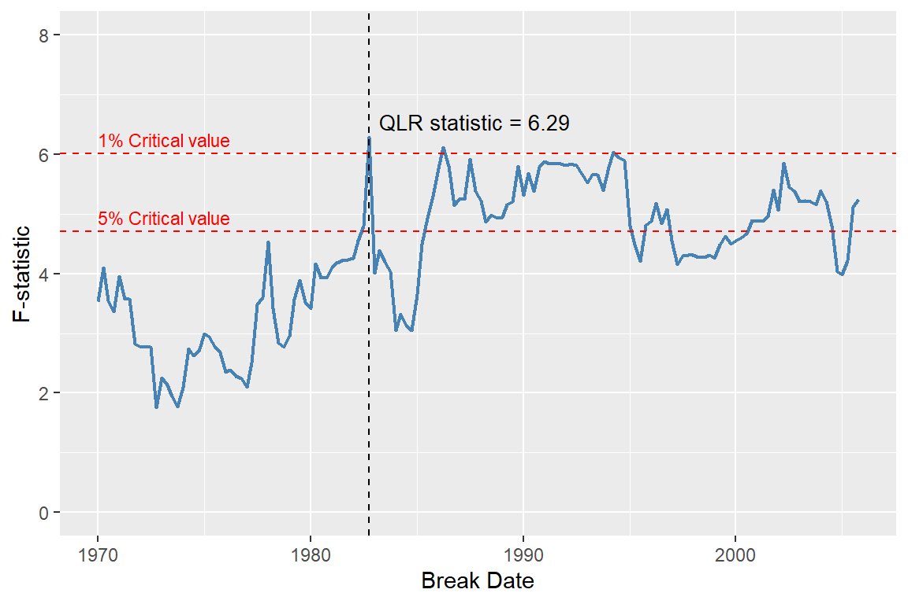
In the next example, we consider the ADL(4,4) model in Equation 24.12 for the change in the inflation rate. We want to test whether the intercept term and the coefficients on the lags of the unemployment rate are constant over the full sample. For each possible break date, we estimate the following regression model: \[ \begin{align*} \Delta \text{inf}_t &= \beta_0 + \beta_1 \Delta \text{inf}_{t-1} + \cdots + \beta_4 \Delta\text{inf}_{t-4}+ \delta_1 \text{Urate}_{t-1}+\cdots+ \delta_4 \text{Urate}_{t-4}\\ &+ \gamma_0D_t(\tau)+ \gamma_1D_t(\tau) \text{Urate}_{t-1}+\cdots+ \gamma_4D_t(\tau)\text{Urate}_{t-4}+u_t. \end{align*} \]
We compute the Chow test statistic for the null hypothesis \(H_0:\gamma_0 = \gamma_1 =\gamma_2=\gamma_3=\gamma_4=0\) for each possible break date \(\tau\). The break date is allowed to vary between 1970:Q1 and 1997:Q4. For each break date, we estimate the regression model, compute the Chow test statistic using the linearHypothesis function from the car package, and store the result in the savers vector.
# Sample data
tsInf <- ts(dfInflation, start = c(1957, 1), frequency = 4)
tsInf <- tsInf[, c("Delta_Inf", "u_rate")]
# Break dates (quarterly)
break_tau <- window(time(tsInf), start = c(1970, 1), end = c(1997, 4))
# Storage for F-statistics
savers <- numeric(length(break_tau))
for (i in seq_along(break_tau)) {
# Add dummy to ts object
tsD <- ts(
as.numeric(time(tsInf) > break_tau[i]),
start = start(tsInf),
frequency = frequency(tsInf)
)
tsdata <- cbind(tsInf, D = tsD)
# Estimate ADL(4,4) with dynlm
model <- dynlm(
tsInf.Delta_Inf ~ L(tsInf.Delta_Inf, 1:4) +
L(tsInf.u_rate, 1:4) +
D +
D:L(tsInf.u_rate, 1) +
D:L(tsInf.u_rate, 2) +
D:L(tsInf.u_rate, 3) +
D:L(tsInf.u_rate, 4),
data = tsdata
)
# Robust F-test
test <- linearHypothesis(
model,
c(
"D = 0",
"D:L(tsInf.u_rate, 1) = 0",
"D:L(tsInf.u_rate, 2) = 0",
"D:L(tsInf.u_rate, 3) = 0",
"D:L(tsInf.u_rate, 4) = 0"
),
white.adjust = "hc1",
test = "F"
)
savers[i] <- test$F[2]
}
# QLR statistic and break date
qlr_stat <- max(savers, na.rm = TRUE)
break_date <- break_tau[which.max(savers)]
cat("QLR statistic:", round(qlr_stat, 2))QLR statistic: 6.06cat("Break date:", break_date)Break date: 1981.75The QLR test statistic is 6.06 with the corresponding break date of 1981:Q4. The critical value for the QLR test statistic is 4.53 at the 1% significance level (see Table 15.5 in Stock and Watson (2020)). Therefore, we reject the null hypothesis that the coefficients are stable at the 1% significance level. Figure 24.19 shows the plot of all computed F-statistic values.
# Create a data frame for plotting
df_savers <- data.frame(
break_date = break_tau,
Fstat = savers
)
qlr_value <- max(df_savers$Fstat)
qlr_index <- which.max(df_savers$Fstat)
qlr_date <- df_savers$break_date[qlr_index]
# Critical values
crit_1 <- 4.53 # 1%
crit_5 <- 3.79 # 5%
# Plot
ggplot(df_savers, aes(x = break_date, y = Fstat)) +
geom_line(color = "steelblue", linewidth = 0.8) +
geom_hline(yintercept = crit_1, linetype = "dashed", color = "red", linewidth = 0.5) +
geom_hline(yintercept = crit_5, linetype = "dashed", color = "red", linewidth = 0.5) +
geom_vline(xintercept = qlr_date, linetype = "dashed", color = "black", linewidth = 0.5) +
annotate("text", x = qlr_date + 0.5, y = qlr_value + 0.4,
label = paste0("QLR statistic = ", round(qlr_value, 2)),
hjust = 0, vjust = 1, size = 3.5, color = "black") +
annotate("text", x = 1970, y = crit_1,
label = "1% Critical value", hjust = 0, vjust = -0.5,
size = 3, color = "red") +
annotate("text", x = 1970, y = crit_5,
label = "5% Critical value", hjust = 0, vjust = -0.5,
size = 3, color = "red") +
labs(x = "Break Date", y = "F-statistic")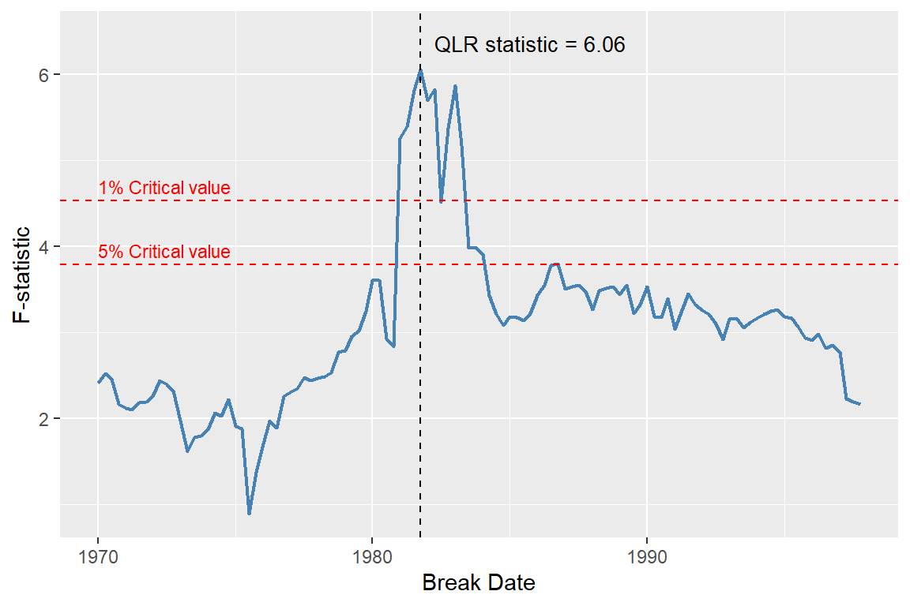
24.12.8 Using pseudo out-of-sample forecast for detecting breaks
We can also use the pseudo out-of-sample forecast to check the stability of the coefficients. To that end, we can plot the in-sample predicted values, the pseudo out-of-sample forecast, and the actual values. If the coefficients are stable, we should not observe any deterioration in the pseudo out-of-sample forecasts. Another way that we can check the stability of the coefficients is to compare the estimates of MSFE\(_\text{POOS}\) and MSFE\(_\text{FPE}\). If the series is stationary, the two estimates should be similar. A large deviation between the estimates of MSFE\(_\text{POOS}\) and MSFE\(_\text{FPE}\) indicates that the coefficients are not stable.
Using the QLR statistic, we show that the intercept and the coefficients on the lags of the term spread in the ADL(2,2) model for the U.S. growth rate are not stable. The QLR statistic is 6.29, suggesting a break date of 1982:Q4. In the next example, we compute pseudo-out-of-sample forecasts for the U.S. GDP growth rate over the period 2003:Q1–2017:Q3, using an estimation sample from 1981:Q1 to 2002:Q4. The RMSFE estimates are reported in Table 24.15. The RMSFE values based on the SER and FPE methods in this table are computed from the model fitted to the data over the 1981:Q1–2002:Q4 sample period. The RMSFE based on the POOS method is 2.29, which is slightly smaller than the RMSFE based on the FPE method (2.35).
# Prepare data
mydata <- merge(dfGrowth, dfTermSpread)
mydata <- ts(mydata[, c("YGROWTH", "RSPREAD")], start = c(1962, 1), frequency = 4)
mydata_zoo <- as.zoo(mydata)
# Restrict to 1981 Q1 onwards
mydata_zoo <- window(mydata_zoo, start = as.yearqtr("1981 Q1"), end = as.yearqtr("2017 Q4"))
# RMSFE_SER and RMSFE_FPE for the full sample
model_full <- dynlm(YGROWTH ~ L(YGROWTH, 1:2) + L(RSPREAD, 1:2), data = mydata_zoo)
residuals_full <- residuals(model_full)
RMSFE_SER <- sqrt(mean(residuals_full^2))
RMSFE_FPE <- sqrt(((nrow(mydata_zoo) + 2 + 1)/nrow(mydata_zoo)) * mean(residuals_full^2))
# Pseudo Out-of-Sample Forecasts (2003 Q1 onwards)
poos_start <- which(zoo::index(mydata_zoo) == as.yearqtr("2003 Q1"))
T <- nrow(mydata_zoo)
savers_adl22 <- matrix(NA, nrow = T - poos_start, ncol = 2)
idx <- zoo::index(mydata_zoo)
counter <- 1
for (t in poos_start:(T-1)) {
data_train <- window(mydata_zoo, end = idx[t-1])
model <- dynlm(YGROWTH ~ L(YGROWTH, 1:2) + L(RSPREAD, 1:2), data = data_train)
params <- coef(model)
y1 <- as.numeric(mydata_zoo$YGROWTH[t])
y2 <- as.numeric(mydata_zoo$YGROWTH[t-1])
r1 <- as.numeric(mydata_zoo$RSPREAD[t])
r2 <- as.numeric(mydata_zoo$RSPREAD[t-1])
predicted <- params[1] + params[2]*y1 + params[3]*y2 + params[4]*r1 + params[5]*r2
actual <- as.numeric(mydata_zoo$YGROWTH[t+1])
savers_adl22[counter, 1] <- actual - predicted
savers_adl22[counter, 2] <- predicted
counter <- counter + 1
}
# RMSFE for POOS method
RMSFE_POOS <- sqrt(mean(savers_adl22[, 1]^2))# Create a data frame for the RMSFE results
rmsfe_results <- data.frame(
Method = c("SER", "FPE", "POOS"),
RMSFE = c(RMSFE_SER, RMSFE_FPE, RMSFE_POOS)
)
column_names <- c("Method", "RMSFE")
kable(rmsfe_results, digits = 3, col.names = column_names, align = "c")| Method | RMSFE |
|---|---|
| SER | 2.527 |
| FPE | 2.553 |
| POOS | 2.500 |
In Figure 24.20, we plot the actual growth rate, the forecasted growth rate, and the forecast errors. The forecasted growth rate closely tracks the actual U.S. GDP growth rate, except for a single period in 2008:Q4, when the forecast error is notably large.
Based on our results in Table 24.15 and Figure 24.20, we conclude that-aside from the large forecast error in 2008:Q4-the performance of the ADL(2,2) forecasting model during the pseudo-out-of-sample period (2003:Q1–2017:Q4) is relatively better than its performance during the in-sample period (1981:Q1–2002:Q4).
df_subset <- window(mydata_zoo, start = as.yearqtr("2003 Q1"), end = as.yearqtr("2017 Q3"))
df_forecast <- data.frame(
Date = zoo::index(df_subset),
Actual = coredata(df_subset$YGROWTH),
Forecast = savers_adl22[, 2],
Error = savers_adl22[, 1]
)
# Plot
ggplot(df_forecast, aes(x = Date)) +
geom_line(aes(y = Actual), color = "black", linewidth = 0.7, linetype = "solid") +
geom_line(aes(y = Forecast), color = "red", linewidth = 0.7, linetype = "solid") +
geom_ribbon(aes(ymin = Forecast, ymax = Actual), fill = "steelblue", alpha = 0.3) +
geom_hline(yintercept = 0, linetype = "dashed", color = "black") +
labs(
x = "Date",
y = "GDP growth rate",
title = "Actual vs Forecasted GDP Growth Rate with Forecast Errors"
) 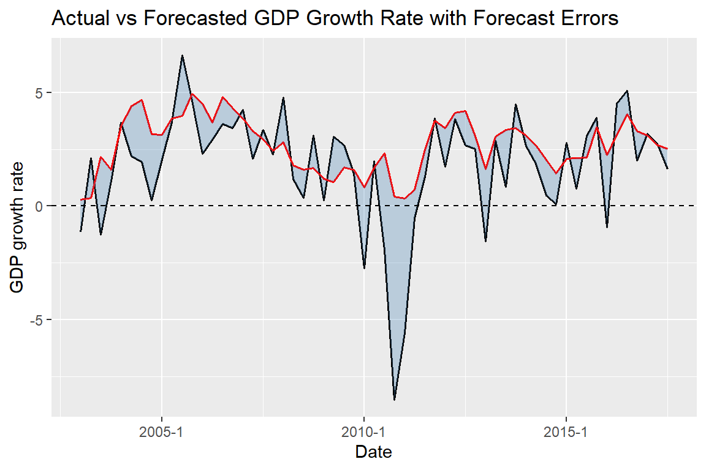
24.12.9 Avoiding the problems caused by breaks
The best way to deal with the problems caused by a break depends on the source of the break. If there is a single break detected by the QLR test, we can simply adjust our regression by including the break dummy variable and the interaction terms between the break dummy variable and the other regressors. If we suspect that all coefficients break, we may also choose using only the post-break data to estimate our regression model.
24.13 ARMA and ARIMA models
We can use the lag polynomials to extend the AR and ADL models to the autoregressive–moving average (ARMA) model. This type of model also allows for a distributed lag process for the error term. The ARMA(p,q) model is defined as \[ Y_t = \beta_0 + \beta_1Y_{t-1} + \cdots + \beta_pY_{t-p} + u_t + \theta_1u_{t-1} + \cdots + \theta_qu_{t-q}, \] where \(\beta_1,\beta_2,\ldots,\beta_p\) are the AR coefficients, \(\theta_1,\theta_2,\ldots,\theta_q\) are the moving average (MA) coefficients, and \(u_t\) is an i.i.d. error term with mean zero and variance \(\sigma^2_u\). We can express the ARMA(p,q) model as \[ \begin{align*} &(1 - \beta_1L - \cdots - \beta_pL^p)Y_t = \beta_0 + (1 + \theta_1L + \cdots + \theta_qL^q)u_t\\ &\implies a(L)Y_t = \beta_0 + b(L)u_t, \end{align*} \] where \(a(L)=(1 - \beta_1L - \cdots - \beta_pL^p)\) and \(b(L)=(1 + \theta_1L + \cdots + \theta_qL^q)\).
The process \(Y_t\) follows an autoregressive–integrated moving average model of order (p,d,q), denoted by ARIMA(p,d,q), if the d-th difference of \(Y_t\) follows an ARMA(p,q) process. In other words, \(Y_t\) follows an ARIMA(p,d,q) process if \[ a(L)(1-L)^dY_t = \beta_0 + b(L)u_t. \]
According to Stock and Watson (2020), the AR and ARMA models are different ways we use to approximate the autocovariances of \(Y_t\). Indeed, any weakly stationary process can be either written as an AR or MA process. The result that any weakly stationary process can be written in an MA form is known as the Wold decomposition theorem. For the details, see Hamilton (1994) and Hansen (2022).
In R, the ARIMA(p,d,q) model can be estimated using the arima function from the stats package. The function requires the order of the AR, differencing, and MA components to be specified. The syntax is as follows:
arima(x, order = c(0L, 0L, 0L),
seasonal = list(order = c(0L, 0L, 0L), period = NA),
xreg = NULL, include.mean = TRUE,
transform.pars = TRUE,
fixed = NULL, init = NULL,
method = c("CSS-ML", "ML", "CSS"), n.cond,
SSinit = c("Gardner1980", "Rossignol2011"),
optim.method = "BFGS",
optim.control = list(), kappa = 1e6)where x is the univariate time series data, and order = c(0L, 0L, 0L) is the vector of three integers specifying the order of the AR, differencing, and MA components, respectively.